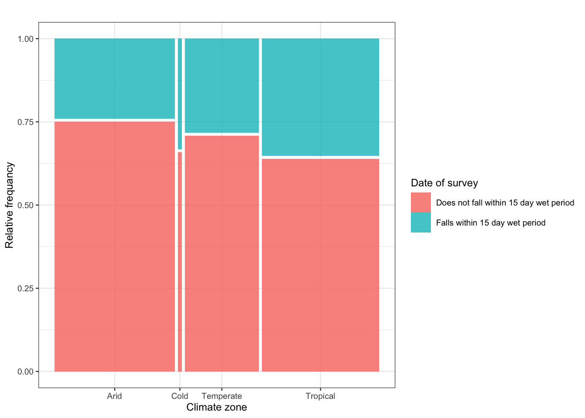
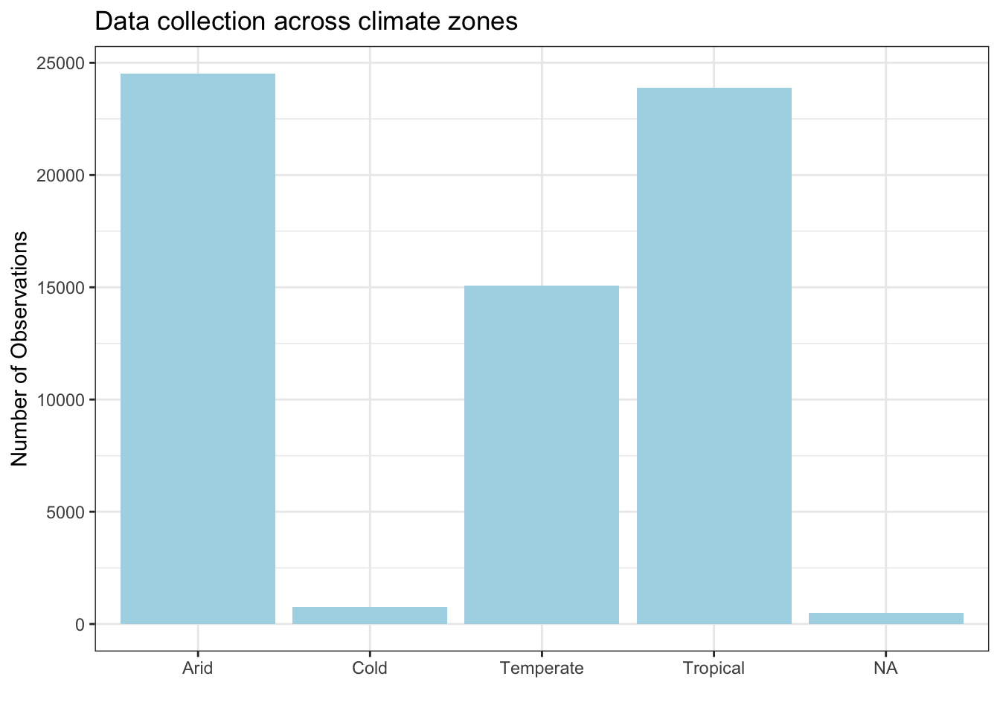

<!DOCTYPE html>
<html xmlns="http://www.w3.org/1999/xhtml" lang="en" xml:lang="en"><head>

<meta charset="utf-8">
<meta name="generator" content="quarto-1.2.269">

<meta name="viewport" content="width=device-width, initial-scale=1.0, user-scalable=yes">


<title>climate_classifications</title>
<style>
code{white-space: pre-wrap;}
span.smallcaps{font-variant: small-caps;}
div.columns{display: flex; gap: min(4vw, 1.5em);}
div.column{flex: auto; overflow-x: auto;}
div.hanging-indent{margin-left: 1.5em; text-indent: -1.5em;}
ul.task-list{list-style: none;}
ul.task-list li input[type="checkbox"] {
  width: 0.8em;
  margin: 0 0.8em 0.2em -1.6em;
  vertical-align: middle;
}
pre > code.sourceCode { white-space: pre; position: relative; }
pre > code.sourceCode > span { display: inline-block; line-height: 1.25; }
pre > code.sourceCode > span:empty { height: 1.2em; }
.sourceCode { overflow: visible; }
code.sourceCode > span { color: inherit; text-decoration: inherit; }
div.sourceCode { margin: 1em 0; }
pre.sourceCode { margin: 0; }
@media screen {
div.sourceCode { overflow: auto; }
}
@media print {
pre > code.sourceCode { white-space: pre-wrap; }
pre > code.sourceCode > span { text-indent: -5em; padding-left: 5em; }
}
pre.numberSource code
  { counter-reset: source-line 0; }
pre.numberSource code > span
  { position: relative; left: -4em; counter-increment: source-line; }
pre.numberSource code > span > a:first-child::before
  { content: counter(source-line);
    position: relative; left: -1em; text-align: right; vertical-align: baseline;
    border: none; display: inline-block;
    -webkit-touch-callout: none; -webkit-user-select: none;
    -khtml-user-select: none; -moz-user-select: none;
    -ms-user-select: none; user-select: none;
    padding: 0 4px; width: 4em;
    color: #aaaaaa;
  }
pre.numberSource { margin-left: 3em; border-left: 1px solid #aaaaaa;  padding-left: 4px; }
div.sourceCode
  {   }
@media screen {
pre > code.sourceCode > span > a:first-child::before { text-decoration: underline; }
}
code span.al { color: #ff0000; font-weight: bold; } /* Alert */
code span.an { color: #60a0b0; font-weight: bold; font-style: italic; } /* Annotation */
code span.at { color: #7d9029; } /* Attribute */
code span.bn { color: #40a070; } /* BaseN */
code span.bu { color: #008000; } /* BuiltIn */
code span.cf { color: #007020; font-weight: bold; } /* ControlFlow */
code span.ch { color: #4070a0; } /* Char */
code span.cn { color: #880000; } /* Constant */
code span.co { color: #60a0b0; font-style: italic; } /* Comment */
code span.cv { color: #60a0b0; font-weight: bold; font-style: italic; } /* CommentVar */
code span.do { color: #ba2121; font-style: italic; } /* Documentation */
code span.dt { color: #902000; } /* DataType */
code span.dv { color: #40a070; } /* DecVal */
code span.er { color: #ff0000; font-weight: bold; } /* Error */
code span.ex { } /* Extension */
code span.fl { color: #40a070; } /* Float */
code span.fu { color: #06287e; } /* Function */
code span.im { color: #008000; font-weight: bold; } /* Import */
code span.in { color: #60a0b0; font-weight: bold; font-style: italic; } /* Information */
code span.kw { color: #007020; font-weight: bold; } /* Keyword */
code span.op { color: #666666; } /* Operator */
code span.ot { color: #007020; } /* Other */
code span.pp { color: #bc7a00; } /* Preprocessor */
code span.sc { color: #4070a0; } /* SpecialChar */
code span.ss { color: #bb6688; } /* SpecialString */
code span.st { color: #4070a0; } /* String */
code span.va { color: #19177c; } /* Variable */
code span.vs { color: #4070a0; } /* VerbatimString */
code span.wa { color: #60a0b0; font-weight: bold; font-style: italic; } /* Warning */
</style>


<script src="climate_classifications_final_files/libs/clipboard/clipboard.min.js"></script>
<script src="climate_classifications_final_files/libs/quarto-html/quarto.js"></script>
<script src="climate_classifications_final_files/libs/quarto-html/popper.min.js"></script>
<script src="climate_classifications_final_files/libs/quarto-html/tippy.umd.min.js"></script>
<script src="climate_classifications_final_files/libs/quarto-html/anchor.min.js"></script>
<link href="climate_classifications_final_files/libs/quarto-html/tippy.css" rel="stylesheet">
<link href="climate_classifications_final_files/libs/quarto-html/quarto-syntax-highlighting.css" rel="stylesheet" id="quarto-text-highlighting-styles">
<script src="climate_classifications_final_files/libs/bootstrap/bootstrap.min.js"></script>
<link href="climate_classifications_final_files/libs/bootstrap/bootstrap-icons.css" rel="stylesheet">
<link href="climate_classifications_final_files/libs/bootstrap/bootstrap.min.css" rel="stylesheet" id="quarto-bootstrap" data-mode="light">


</head>

<body class="fullcontent">

<div id="quarto-content" class="page-columns page-rows-contents page-layout-article">

<main class="content" id="quarto-document-content">

<header id="title-block-header" class="quarto-title-block default">
<div class="quarto-title">
<h1 class="title">climate_classifications</h1>
</div>


<div class="quarto-title-meta">

    
  
    
  </div>
  

</header>

<section id="assigning-surveyed-regions-to-climate-zones" class="level1">
<h1>Assigning Surveyed Regions to Climate Zones</h1>
<section id="summary" class="level2">
<h2 class="anchored" data-anchor-id="summary">1. Summary</h2>
<p>Here we classify the global administrative districts included in the Multiple Indicator Cluster Surveys (MICS) used in our study into climate zones based on the global distribution of Köppen-Geiger climate zones by <a href="https://www.nature.com/articles/s41597-023-02549-6">Beck et al.&nbsp;(2023)</a>, downloaded from <a href="http://www.gloh2o.org/koppen">www.gloh2o.org/koppen</a> on 9.02.2024. We identified the corresponding climate zones by overlaying the borders of the global administrative districts included in our data set with the climate maps.</p>
<div class="quarto-figure quarto-figure-center">
<figure class="figure">
<p><a href="https://code.earthengine.google.com/92ac33bbf61d1ff9629e179082f975ae"></a></p>
<p></p><figcaption class="figure-caption">Figure 1: Köppen-Geiger climate zones with the administrative districts included in our data set marked in black. Blue regions are tropical, red regions are arid, yellow regions are temperate, turquoise regions are cold and white are polar. The code on Google Earth Engine can be accessed [here](https://code.earthengine.google.com/92ac33bbf61d1ff9629e179082f975ae).</figcaption><p></p>
</figure>
</div>
<div class="cell">
<div class="sourceCode cell-code" id="cb1"><pre class="sourceCode r code-with-copy"><code class="sourceCode r"><span id="cb1-1"><a href="#cb1-1" aria-hidden="true" tabindex="-1"></a> <span class="fu">library</span>(here)</span></code><button title="Copy to Clipboard" class="code-copy-button"><i class="bi"></i></button></pre></div>
<div class="cell-output cell-output-stderr">
<pre><code>here() starts at /Users/greenwes/Documents/GitHub/mapping-safe-drinking-water-use-LMICs</code></pre>
</div>
<div class="sourceCode cell-code" id="cb3"><pre class="sourceCode r code-with-copy"><code class="sourceCode r"><span id="cb3-1"><a href="#cb3-1" aria-hidden="true" tabindex="-1"></a> <span class="fu">library</span>(dplyr)</span></code><button title="Copy to Clipboard" class="code-copy-button"><i class="bi"></i></button></pre></div>
<div class="cell-output cell-output-stderr">
<pre><code>
Attaching package: 'dplyr'</code></pre>
</div>
<div class="cell-output cell-output-stderr">
<pre><code>The following objects are masked from 'package:stats':

    filter, lag</code></pre>
</div>
<div class="cell-output cell-output-stderr">
<pre><code>The following objects are masked from 'package:base':

    intersect, setdiff, setequal, union</code></pre>
</div>
<div class="sourceCode cell-code" id="cb7"><pre class="sourceCode r code-with-copy"><code class="sourceCode r"><span id="cb7-1"><a href="#cb7-1" aria-hidden="true" tabindex="-1"></a> <span class="fu">library</span>(tidyverse)</span></code><button title="Copy to Clipboard" class="code-copy-button"><i class="bi"></i></button></pre></div>
<div class="cell-output cell-output-stderr">
<pre><code>── Attaching packages
───────────────────────────────────────
tidyverse 1.3.2 ──</code></pre>
</div>
<div class="cell-output cell-output-stderr">
<pre><code>✔ ggplot2 3.4.0     ✔ purrr   1.0.1
✔ tibble  3.1.8     ✔ stringr 1.5.0
✔ tidyr   1.2.1     ✔ forcats 0.5.2
✔ readr   2.1.2     
── Conflicts ────────────────────────────────────────── tidyverse_conflicts() ──
✖ dplyr::filter() masks stats::filter()
✖ dplyr::lag()    masks stats::lag()</code></pre>
</div>
<div class="sourceCode cell-code" id="cb10"><pre class="sourceCode r code-with-copy"><code class="sourceCode r"><span id="cb10-1"><a href="#cb10-1" aria-hidden="true" tabindex="-1"></a> <span class="fu">library</span>(vcd)</span></code><button title="Copy to Clipboard" class="code-copy-button"><i class="bi"></i></button></pre></div>
<div class="cell-output cell-output-stderr">
<pre><code>Loading required package: grid</code></pre>
</div>
<div class="sourceCode cell-code" id="cb12"><pre class="sourceCode r code-with-copy"><code class="sourceCode r"><span id="cb12-1"><a href="#cb12-1" aria-hidden="true" tabindex="-1"></a> <span class="fu">library</span>(ggplot2)</span>
<span id="cb12-2"><a href="#cb12-2" aria-hidden="true" tabindex="-1"></a> <span class="fu">library</span>(ggmosaic)</span></code><button title="Copy to Clipboard" class="code-copy-button"><i class="bi"></i></button></pre></div>
<div class="cell-output cell-output-stderr">
<pre><code>
Attaching package: 'ggmosaic'

The following objects are masked from 'package:vcd':

    mosaic, spine</code></pre>
</div>
</div>
</section>
<section id="preparing-data-frames" class="level2">
<h2 class="anchored" data-anchor-id="preparing-data-frames">2. Preparing data frames</h2>
<div class="cell">
<div class="sourceCode cell-code" id="cb14"><pre class="sourceCode r code-with-copy"><code class="sourceCode r"><span id="cb14-1"><a href="#cb14-1" aria-hidden="true" tabindex="-1"></a><span class="co"># laoding dataframe</span></span>
<span id="cb14-2"><a href="#cb14-2" aria-hidden="true" tabindex="-1"></a></span>
<span id="cb14-3"><a href="#cb14-3" aria-hidden="true" tabindex="-1"></a><span class="fu">source</span>(<span class="fu">here</span>(<span class="st">"./2_Data_cleaning/3_MICS_Preprocessing_Dataframes/1_Compiling_MICS_test_and_training_sets/functionsForJoiningAndStructuringDataframes.R"</span>))</span>
<span id="cb14-4"><a href="#cb14-4" aria-hidden="true" tabindex="-1"></a></span>
<span id="cb14-5"><a href="#cb14-5" aria-hidden="true" tabindex="-1"></a>daily_precipitation <span class="ot">&lt;-</span> <span class="fu">read.csv</span>(<span class="fu">here</span>(<span class="st">"./1_Data/EnvironmentalFeatures/DailyClimate_MICS_aroundSampleDate.csv"</span>))</span>
<span id="cb14-6"><a href="#cb14-6" aria-hidden="true" tabindex="-1"></a></span>
<span id="cb14-7"><a href="#cb14-7" aria-hidden="true" tabindex="-1"></a>df_MICS_WithHouseholdID <span class="ot">&lt;-</span> <span class="fu">read.csv</span>(<span class="st">"~/switchdrive/PHD-2020-2024/SMDWs submission/Data_for_reviewers/df_MICS_SMDW_WithHouseholdID.csv"</span>)</span>
<span id="cb14-8"><a href="#cb14-8" aria-hidden="true" tabindex="-1"></a></span>
<span id="cb14-9"><a href="#cb14-9" aria-hidden="true" tabindex="-1"></a>df.MICS_HH <span class="ot">&lt;-</span> <span class="fu">readHouseHoldSurveyData</span>() </span>
<span id="cb14-10"><a href="#cb14-10" aria-hidden="true" tabindex="-1"></a></span>
<span id="cb14-11"><a href="#cb14-11" aria-hidden="true" tabindex="-1"></a><span class="co"># Adjusting spelling of country names to join data frames</span></span>
<span id="cb14-12"><a href="#cb14-12" aria-hidden="true" tabindex="-1"></a></span>
<span id="cb14-13"><a href="#cb14-13" aria-hidden="true" tabindex="-1"></a>df.MICS_HH<span class="sc">$</span>country[df.MICS_HH<span class="sc">$</span>country <span class="sc">==</span> <span class="st">"GuineaBissau"</span>] <span class="ot">&lt;-</span> <span class="st">"Guinea-Bissau"</span></span>
<span id="cb14-14"><a href="#cb14-14" aria-hidden="true" tabindex="-1"></a>df.MICS_HH<span class="sc">$</span>country[df.MICS_HH<span class="sc">$</span>country <span class="sc">==</span> <span class="st">"Lao"</span>] <span class="ot">&lt;-</span> <span class="st">"Laos"</span></span>
<span id="cb14-15"><a href="#cb14-15" aria-hidden="true" tabindex="-1"></a>df.MICS_HH<span class="sc">$</span>country[df.MICS_HH<span class="sc">$</span>country <span class="sc">==</span> <span class="st">"PakistanPunjab"</span>] <span class="ot">&lt;-</span> <span class="st">"Pakistan"</span></span>
<span id="cb14-16"><a href="#cb14-16" aria-hidden="true" tabindex="-1"></a>df.MICS_HH<span class="sc">$</span>country[df.MICS_HH<span class="sc">$</span>country <span class="sc">==</span> <span class="st">"Palestine"</span>] <span class="ot">&lt;-</span> <span class="st">"Palestina"</span></span>
<span id="cb14-17"><a href="#cb14-17" aria-hidden="true" tabindex="-1"></a>df.MICS_HH<span class="sc">$</span>country[df.MICS_HH<span class="sc">$</span>country <span class="sc">==</span> <span class="st">"São Tomé and PrÃncipe"</span>] <span class="ot">&lt;-</span> <span class="st">"São Tomé and Príncipe"</span></span>
<span id="cb14-18"><a href="#cb14-18" aria-hidden="true" tabindex="-1"></a>df.MICS_HH<span class="sc">$</span>country[df.MICS_HH<span class="sc">$</span>country <span class="sc">==</span> <span class="st">"SierraLeone"</span>] <span class="ot">&lt;-</span> <span class="st">"Sierra Leone"</span></span>
<span id="cb14-19"><a href="#cb14-19" aria-hidden="true" tabindex="-1"></a></span>
<span id="cb14-20"><a href="#cb14-20" aria-hidden="true" tabindex="-1"></a></span>
<span id="cb14-21"><a href="#cb14-21" aria-hidden="true" tabindex="-1"></a>df_MICS_WithHouseholdID<span class="sc">$</span>country[df_MICS_WithHouseholdID<span class="sc">$</span>country <span class="sc">==</span> <span class="st">"Guinea Bissau"</span>] <span class="ot">&lt;-</span> <span class="st">"Guinea-Bissau"</span></span>
<span id="cb14-22"><a href="#cb14-22" aria-hidden="true" tabindex="-1"></a>df_MICS_WithHouseholdID<span class="sc">$</span>country[df_MICS_WithHouseholdID<span class="sc">$</span>country <span class="sc">==</span> <span class="st">"Lao"</span>] <span class="ot">&lt;-</span> <span class="st">"Laos"</span></span>
<span id="cb14-23"><a href="#cb14-23" aria-hidden="true" tabindex="-1"></a>df_MICS_WithHouseholdID<span class="sc">$</span>country[df_MICS_WithHouseholdID<span class="sc">$</span>country <span class="sc">==</span> <span class="st">"PakistanPunjab"</span>] <span class="ot">&lt;-</span> <span class="st">"Pakistan"</span></span>
<span id="cb14-24"><a href="#cb14-24" aria-hidden="true" tabindex="-1"></a>df_MICS_WithHouseholdID<span class="sc">$</span>country[df_MICS_WithHouseholdID<span class="sc">$</span>country <span class="sc">==</span> <span class="st">"Palestine"</span>] <span class="ot">&lt;-</span> <span class="st">"Palestina"</span></span>
<span id="cb14-25"><a href="#cb14-25" aria-hidden="true" tabindex="-1"></a>df_MICS_WithHouseholdID<span class="sc">$</span>country[df_MICS_WithHouseholdID<span class="sc">$</span>country <span class="sc">==</span> <span class="st">"Sao Tome and Principe"</span>] <span class="ot">&lt;-</span> <span class="st">"São Tomé and Príncipe"</span></span></code><button title="Copy to Clipboard" class="code-copy-button"><i class="bi"></i></button></pre></div>
</div>
</section>
<section id="assigning-survey-regions-to-climate-zones" class="level2">
<h2 class="anchored" data-anchor-id="assigning-survey-regions-to-climate-zones">3. Assigning survey regions to climate zones</h2>
<div class="cell">
<div class="sourceCode cell-code" id="cb15"><pre class="sourceCode r code-with-copy"><code class="sourceCode r"><span id="cb15-1"><a href="#cb15-1" aria-hidden="true" tabindex="-1"></a><span class="co"># Assigning countries and regions to climate zones </span></span>
<span id="cb15-2"><a href="#cb15-2" aria-hidden="true" tabindex="-1"></a></span>
<span id="cb15-3"><a href="#cb15-3" aria-hidden="true" tabindex="-1"></a>daily_precipitation <span class="ot">&lt;-</span> daily_precipitation  <span class="sc">%&gt;%</span></span>
<span id="cb15-4"><a href="#cb15-4" aria-hidden="true" tabindex="-1"></a>  <span class="fu">mutate</span>(<span class="at">climateZone =</span> <span class="fu">case_when</span>(NAME_0 <span class="sc">==</span> <span class="st">'Algeria'</span> <span class="sc">~</span> <span class="st">'Arid'</span>, </span>
<span id="cb15-5"><a href="#cb15-5" aria-hidden="true" tabindex="-1"></a>                                 NAME_0 <span class="sc">==</span> <span class="st">'Bangladesh'</span> <span class="sc">&amp;</span> NAME_1 <span class="sc">==</span><span class="st">'Barisal'</span> <span class="sc">|</span></span>
<span id="cb15-6"><a href="#cb15-6" aria-hidden="true" tabindex="-1"></a>                                 NAME_0 <span class="sc">==</span> <span class="st">'Bangladesh'</span> <span class="sc">&amp;</span> NAME_1 <span class="sc">==</span><span class="st">'Chittagong'</span> <span class="sc">~</span> <span class="st">'Tropical'</span>,</span>
<span id="cb15-7"><a href="#cb15-7" aria-hidden="true" tabindex="-1"></a>                                 NAME_0 <span class="sc">==</span> <span class="st">'Bangladesh'</span> <span class="sc">&amp;</span> NAME_1 <span class="sc">==</span><span class="st">'Dhaka'</span> <span class="sc">|</span></span>
<span id="cb15-8"><a href="#cb15-8" aria-hidden="true" tabindex="-1"></a>                                 NAME_0 <span class="sc">==</span> <span class="st">'Bangladesh'</span> <span class="sc">&amp;</span> NAME_1 <span class="sc">==</span><span class="st">'Rajshahi'</span> <span class="sc">|</span></span>
<span id="cb15-9"><a href="#cb15-9" aria-hidden="true" tabindex="-1"></a>                                 NAME_0 <span class="sc">==</span> <span class="st">'Bangladesh'</span> <span class="sc">&amp;</span> NAME_1 <span class="sc">==</span><span class="st">'Rangpur'</span> <span class="sc">|</span></span>
<span id="cb15-10"><a href="#cb15-10" aria-hidden="true" tabindex="-1"></a>                                 NAME_0 <span class="sc">==</span> <span class="st">'Bangladesh'</span> <span class="sc">&amp;</span> NAME_1 <span class="sc">==</span><span class="st">'Sylhet'</span> <span class="sc">|</span></span>
<span id="cb15-11"><a href="#cb15-11" aria-hidden="true" tabindex="-1"></a>                                 NAME_0 <span class="sc">==</span> <span class="st">'Bangladesh'</span> <span class="sc">&amp;</span> NAME_1 <span class="sc">==</span><span class="st">'Khulna'</span> <span class="sc">~</span> <span class="st">'Temperate'</span>,</span>
<span id="cb15-12"><a href="#cb15-12" aria-hidden="true" tabindex="-1"></a>                                 NAME_0 <span class="sc">==</span> <span class="st">'Central African Republic'</span> <span class="sc">~</span> <span class="st">'Tropical'</span>,</span>
<span id="cb15-13"><a href="#cb15-13" aria-hidden="true" tabindex="-1"></a>                                 NAME_0 <span class="sc">==</span> <span class="st">'Chad'</span> <span class="sc">&amp;</span> NAME_1 <span class="sc">==</span><span class="st">'Barh el Ghazel'</span> <span class="sc">|</span></span>
<span id="cb15-14"><a href="#cb15-14" aria-hidden="true" tabindex="-1"></a>                                 NAME_0 <span class="sc">==</span> <span class="st">'Chad'</span> <span class="sc">&amp;</span> NAME_1 <span class="sc">==</span><span class="st">'Batha'</span> <span class="sc">|</span></span>
<span id="cb15-15"><a href="#cb15-15" aria-hidden="true" tabindex="-1"></a>                                 NAME_0 <span class="sc">==</span> <span class="st">'Chad'</span> <span class="sc">&amp;</span> NAME_1 <span class="sc">==</span><span class="st">'Borkou'</span> <span class="sc">|</span></span>
<span id="cb15-16"><a href="#cb15-16" aria-hidden="true" tabindex="-1"></a>                                 NAME_0 <span class="sc">==</span> <span class="st">'Chad'</span> <span class="sc">&amp;</span> NAME_1 <span class="sc">==</span><span class="st">'Chari-Baguirmi'</span> <span class="sc">|</span></span>
<span id="cb15-17"><a href="#cb15-17" aria-hidden="true" tabindex="-1"></a>                                 NAME_0 <span class="sc">==</span> <span class="st">'Chad'</span> <span class="sc">&amp;</span> NAME_1 <span class="sc">==</span><span class="st">'Ennedi Est'</span> <span class="sc">|</span></span>
<span id="cb15-18"><a href="#cb15-18" aria-hidden="true" tabindex="-1"></a>                                 NAME_0 <span class="sc">==</span> <span class="st">'Chad'</span> <span class="sc">&amp;</span> NAME_1 <span class="sc">==</span><span class="st">'Ennedi Ouest'</span> <span class="sc">|</span></span>
<span id="cb15-19"><a href="#cb15-19" aria-hidden="true" tabindex="-1"></a>                                 NAME_0 <span class="sc">==</span> <span class="st">'Chad'</span> <span class="sc">&amp;</span> NAME_1 <span class="sc">==</span><span class="st">'Guéra'</span> <span class="sc">|</span></span>
<span id="cb15-20"><a href="#cb15-20" aria-hidden="true" tabindex="-1"></a>                                 NAME_0 <span class="sc">==</span> <span class="st">'Chad'</span> <span class="sc">&amp;</span> NAME_1 <span class="sc">==</span><span class="st">'Hadjer-Lamis'</span> <span class="sc">|</span></span>
<span id="cb15-21"><a href="#cb15-21" aria-hidden="true" tabindex="-1"></a>                                 NAME_0 <span class="sc">==</span> <span class="st">'Chad'</span> <span class="sc">&amp;</span> NAME_1 <span class="sc">==</span><span class="st">'Kanem'</span> <span class="sc">|</span></span>
<span id="cb15-22"><a href="#cb15-22" aria-hidden="true" tabindex="-1"></a>                                 NAME_0 <span class="sc">==</span> <span class="st">'Chad'</span> <span class="sc">&amp;</span> NAME_1 <span class="sc">==</span><span class="st">'Lac'</span><span class="sc">|</span> </span>
<span id="cb15-23"><a href="#cb15-23" aria-hidden="true" tabindex="-1"></a>                                 NAME_0 <span class="sc">==</span> <span class="st">'Chad'</span> <span class="sc">&amp;</span> NAME_1 <span class="sc">==</span><span class="st">'Ouaddaï'</span><span class="sc">|</span></span>
<span id="cb15-24"><a href="#cb15-24" aria-hidden="true" tabindex="-1"></a>                                 NAME_0 <span class="sc">==</span> <span class="st">'Chad'</span> <span class="sc">&amp;</span> NAME_1 <span class="sc">==</span><span class="st">'Sila'</span><span class="sc">|</span></span>
<span id="cb15-25"><a href="#cb15-25" aria-hidden="true" tabindex="-1"></a>                                 NAME_0 <span class="sc">==</span> <span class="st">'Chad'</span> <span class="sc">&amp;</span> NAME_1 <span class="sc">==</span><span class="st">'Wadi Fira'</span> <span class="sc">~</span> <span class="st">'Arid'</span>,</span>
<span id="cb15-26"><a href="#cb15-26" aria-hidden="true" tabindex="-1"></a>                                 NAME_0 <span class="sc">==</span> <span class="st">'Chad'</span> <span class="sc">&amp;</span> NAME_1 <span class="sc">==</span><span class="st">'Logone Occidental'</span> <span class="sc">|</span></span>
<span id="cb15-27"><a href="#cb15-27" aria-hidden="true" tabindex="-1"></a>                                 NAME_0 <span class="sc">==</span> <span class="st">'Chad'</span> <span class="sc">&amp;</span> NAME_1 <span class="sc">==</span><span class="st">'Logone Oriental'</span> <span class="sc">|</span></span>
<span id="cb15-28"><a href="#cb15-28" aria-hidden="true" tabindex="-1"></a>                                 NAME_0 <span class="sc">==</span> <span class="st">'Chad'</span> <span class="sc">&amp;</span> NAME_1 <span class="sc">==</span><span class="st">'Mandoul'</span> <span class="sc">|</span></span>
<span id="cb15-29"><a href="#cb15-29" aria-hidden="true" tabindex="-1"></a>                                 NAME_0 <span class="sc">==</span> <span class="st">'Chad'</span> <span class="sc">&amp;</span> NAME_1 <span class="sc">==</span><span class="st">'Mayo-Kebbi Est'</span> <span class="sc">|</span></span>
<span id="cb15-30"><a href="#cb15-30" aria-hidden="true" tabindex="-1"></a>                                 NAME_0 <span class="sc">==</span> <span class="st">'Chad'</span> <span class="sc">&amp;</span> NAME_1 <span class="sc">==</span><span class="st">'Mayo-Kebbi Ouest'</span> <span class="sc">|</span></span>
<span id="cb15-31"><a href="#cb15-31" aria-hidden="true" tabindex="-1"></a>                                 NAME_0 <span class="sc">==</span> <span class="st">'Chad'</span> <span class="sc">&amp;</span> NAME_1 <span class="sc">==</span><span class="st">'Moyen-Chari'</span> <span class="sc">|</span></span>
<span id="cb15-32"><a href="#cb15-32" aria-hidden="true" tabindex="-1"></a>                                 NAME_0 <span class="sc">==</span> <span class="st">'Chad'</span> <span class="sc">&amp;</span> NAME_1 <span class="sc">==</span><span class="st">'Ndjamena'</span><span class="sc">|</span></span>
<span id="cb15-33"><a href="#cb15-33" aria-hidden="true" tabindex="-1"></a>                                 NAME_0 <span class="sc">==</span> <span class="st">'Chad'</span> <span class="sc">&amp;</span> NAME_1 <span class="sc">==</span><span class="st">'Salamat'</span><span class="sc">|</span></span>
<span id="cb15-34"><a href="#cb15-34" aria-hidden="true" tabindex="-1"></a>                                 NAME_0 <span class="sc">==</span> <span class="st">'Chad'</span> <span class="sc">&amp;</span> NAME_1 <span class="sc">==</span><span class="st">'Tandjilé'</span> <span class="sc">~</span> <span class="st">'Tropical'</span>,</span>
<span id="cb15-35"><a href="#cb15-35" aria-hidden="true" tabindex="-1"></a>                                 NAME_0 <span class="sc">==</span> <span class="st">'Gambia'</span> <span class="sc">~</span> <span class="st">'Tropical'</span>,</span>
<span id="cb15-36"><a href="#cb15-36" aria-hidden="true" tabindex="-1"></a>                                 NAME_0 <span class="sc">==</span> <span class="st">'Georgia'</span> <span class="sc">&amp;</span> NAME_1 <span class="sc">==</span><span class="st">'Ajaria'</span> <span class="sc">|</span></span>
<span id="cb15-37"><a href="#cb15-37" aria-hidden="true" tabindex="-1"></a>                                 NAME_0 <span class="sc">==</span> <span class="st">'Georgia'</span> <span class="sc">&amp;</span> NAME_1 <span class="sc">==</span><span class="st">'Guria'</span> <span class="sc">|</span></span>
<span id="cb15-38"><a href="#cb15-38" aria-hidden="true" tabindex="-1"></a>                                 NAME_0 <span class="sc">==</span> <span class="st">'Georgia'</span> <span class="sc">&amp;</span> NAME_1 <span class="sc">==</span><span class="st">'Imereti'</span> <span class="sc">|</span></span>
<span id="cb15-39"><a href="#cb15-39" aria-hidden="true" tabindex="-1"></a>                                 NAME_0 <span class="sc">==</span> <span class="st">'Georgia'</span> <span class="sc">&amp;</span> NAME_1 <span class="sc">==</span><span class="st">'Kakheti'</span> <span class="sc">|</span></span>
<span id="cb15-40"><a href="#cb15-40" aria-hidden="true" tabindex="-1"></a>                                 NAME_0 <span class="sc">==</span> <span class="st">'Georgia'</span> <span class="sc">&amp;</span> NAME_1 <span class="sc">==</span><span class="st">'Mtskheta-Mtianeti'</span><span class="sc">|</span></span>
<span id="cb15-41"><a href="#cb15-41" aria-hidden="true" tabindex="-1"></a>                                 NAME_0 <span class="sc">==</span> <span class="st">'Georgia'</span> <span class="sc">&amp;</span> NAME_1 <span class="sc">==</span><span class="st">'Samegrelo-Zemo Svaneti'</span><span class="sc">|</span></span>
<span id="cb15-42"><a href="#cb15-42" aria-hidden="true" tabindex="-1"></a>                                 NAME_0 <span class="sc">==</span> <span class="st">'Georgia'</span> <span class="sc">&amp;</span> NAME_1 <span class="sc">==</span><span class="st">'Shida Kartli'</span></span>
<span id="cb15-43"><a href="#cb15-43" aria-hidden="true" tabindex="-1"></a>                                 <span class="sc">~</span> <span class="st">'Temperate'</span>,</span>
<span id="cb15-44"><a href="#cb15-44" aria-hidden="true" tabindex="-1"></a>                                 NAME_0 <span class="sc">==</span> <span class="st">'Georgia'</span> <span class="sc">&amp;</span> NAME_1 <span class="sc">==</span><span class="st">'Kvemo Kartli'</span><span class="sc">|</span></span>
<span id="cb15-45"><a href="#cb15-45" aria-hidden="true" tabindex="-1"></a>                                 NAME_0 <span class="sc">==</span> <span class="st">'Georgia'</span> <span class="sc">&amp;</span> NAME_1 <span class="sc">==</span><span class="st">'Tbilisi'</span> <span class="sc">~</span> <span class="st">'Arid'</span>,</span>
<span id="cb15-46"><a href="#cb15-46" aria-hidden="true" tabindex="-1"></a>                                 NAME_0 <span class="sc">==</span> <span class="st">'Georgia'</span> <span class="sc">&amp;</span> NAME_1 <span class="sc">==</span><span class="st">'Samtskhe-Javakheti'</span> <span class="sc">~</span> <span class="st">'Cold'</span>,</span>
<span id="cb15-47"><a href="#cb15-47" aria-hidden="true" tabindex="-1"></a>                                 NAME_0 <span class="sc">==</span> <span class="st">'Ghana'</span> <span class="sc">~</span> <span class="st">'Tropical'</span>,</span>
<span id="cb15-48"><a href="#cb15-48" aria-hidden="true" tabindex="-1"></a>                                 NAME_0 <span class="sc">==</span> <span class="st">'Guinea-Bissau'</span> <span class="sc">~</span> <span class="st">'Tropical'</span>,</span>
<span id="cb15-49"><a href="#cb15-49" aria-hidden="true" tabindex="-1"></a>                                 NAME_0 <span class="sc">==</span> <span class="st">'Guyana'</span> <span class="sc">~</span> <span class="st">'Tropical'</span>,</span>
<span id="cb15-50"><a href="#cb15-50" aria-hidden="true" tabindex="-1"></a>                                 NAME_0 <span class="sc">==</span> <span class="st">'Guyana'</span> <span class="sc">~</span> <span class="st">'Tropical'</span>,</span>
<span id="cb15-51"><a href="#cb15-51" aria-hidden="true" tabindex="-1"></a>                                 NAME_0 <span class="sc">==</span> <span class="st">'Iraq'</span> <span class="sc">&amp;</span> NAME_1 <span class="sc">==</span><span class="st">'Dihok'</span><span class="sc">|</span></span>
<span id="cb15-52"><a href="#cb15-52" aria-hidden="true" tabindex="-1"></a>                                 NAME_0 <span class="sc">==</span> <span class="st">'Iraq'</span> <span class="sc">&amp;</span> NAME_1 <span class="sc">==</span><span class="st">'Arbil'</span><span class="sc">|</span></span>
<span id="cb15-53"><a href="#cb15-53" aria-hidden="true" tabindex="-1"></a>                                 NAME_0 <span class="sc">==</span> <span class="st">'Iraq'</span> <span class="sc">&amp;</span> NAME_1 <span class="sc">==</span><span class="st">'As-Sulaymaniyah'</span> <span class="sc">~</span> <span class="st">'Temperate'</span>,</span>
<span id="cb15-54"><a href="#cb15-54" aria-hidden="true" tabindex="-1"></a>                                 NAME_0 <span class="sc">==</span> <span class="st">'Iraq'</span> <span class="sc">&amp;</span> NAME_1 <span class="sc">==</span><span class="st">'Al-Anbar'</span><span class="sc">|</span></span>
<span id="cb15-55"><a href="#cb15-55" aria-hidden="true" tabindex="-1"></a>                                 NAME_0 <span class="sc">==</span> <span class="st">'Iraq'</span> <span class="sc">&amp;</span> NAME_1 <span class="sc">==</span><span class="st">'Al-Basrah'</span><span class="sc">|</span></span>
<span id="cb15-56"><a href="#cb15-56" aria-hidden="true" tabindex="-1"></a>                                 NAME_0 <span class="sc">==</span> <span class="st">'Iraq'</span> <span class="sc">&amp;</span> NAME_1 <span class="sc">==</span><span class="st">'Al-Muthannia'</span><span class="sc">|</span></span>
<span id="cb15-57"><a href="#cb15-57" aria-hidden="true" tabindex="-1"></a>                                 NAME_0 <span class="sc">==</span> <span class="st">'Iraq'</span> <span class="sc">&amp;</span> NAME_1 <span class="sc">==</span><span class="st">'Al-Qadisiyah'</span><span class="sc">|</span></span>
<span id="cb15-58"><a href="#cb15-58" aria-hidden="true" tabindex="-1"></a>                                 NAME_0 <span class="sc">==</span> <span class="st">'Iraq'</span> <span class="sc">&amp;</span> NAME_1 <span class="sc">==</span><span class="st">'An-Najaf'</span><span class="sc">|</span></span>
<span id="cb15-59"><a href="#cb15-59" aria-hidden="true" tabindex="-1"></a>                                 NAME_0 <span class="sc">==</span> <span class="st">'Iraq'</span> <span class="sc">&amp;</span> NAME_1 <span class="sc">==</span><span class="st">"At-Ta'mim"</span><span class="sc">|</span></span>
<span id="cb15-60"><a href="#cb15-60" aria-hidden="true" tabindex="-1"></a>                                 NAME_0 <span class="sc">==</span> <span class="st">'Iraq'</span> <span class="sc">&amp;</span> NAME_1 <span class="sc">==</span><span class="st">'Babil'</span><span class="sc">|</span></span>
<span id="cb15-61"><a href="#cb15-61" aria-hidden="true" tabindex="-1"></a>                                 NAME_0 <span class="sc">==</span> <span class="st">'Iraq'</span> <span class="sc">&amp;</span> NAME_1 <span class="sc">==</span><span class="st">'Baghdad'</span><span class="sc">|</span></span>
<span id="cb15-62"><a href="#cb15-62" aria-hidden="true" tabindex="-1"></a>                                 NAME_0 <span class="sc">==</span> <span class="st">'Iraq'</span> <span class="sc">&amp;</span> NAME_1 <span class="sc">==</span><span class="st">'Dhi-Qar'</span><span class="sc">|</span></span>
<span id="cb15-63"><a href="#cb15-63" aria-hidden="true" tabindex="-1"></a>                                 NAME_0 <span class="sc">==</span> <span class="st">'Iraq'</span> <span class="sc">&amp;</span> NAME_1 <span class="sc">==</span><span class="st">'Diyala'</span><span class="sc">|</span></span>
<span id="cb15-64"><a href="#cb15-64" aria-hidden="true" tabindex="-1"></a>                                 NAME_0 <span class="sc">==</span> <span class="st">'Iraq'</span> <span class="sc">&amp;</span> NAME_1 <span class="sc">==</span><span class="st">"Karbala'"</span><span class="sc">|</span></span>
<span id="cb15-65"><a href="#cb15-65" aria-hidden="true" tabindex="-1"></a>                                 NAME_0 <span class="sc">==</span> <span class="st">'Iraq'</span> <span class="sc">&amp;</span> NAME_1 <span class="sc">==</span><span class="st">'Maysan'</span><span class="sc">|</span></span>
<span id="cb15-66"><a href="#cb15-66" aria-hidden="true" tabindex="-1"></a>                                 NAME_0 <span class="sc">==</span> <span class="st">'Iraq'</span> <span class="sc">&amp;</span> NAME_1 <span class="sc">==</span><span class="st">'Ninawa'</span><span class="sc">|</span></span>
<span id="cb15-67"><a href="#cb15-67" aria-hidden="true" tabindex="-1"></a>                                 NAME_0 <span class="sc">==</span> <span class="st">'Iraq'</span> <span class="sc">&amp;</span> NAME_1 <span class="sc">==</span><span class="st">'Sala ad-Din'</span><span class="sc">|</span></span>
<span id="cb15-68"><a href="#cb15-68" aria-hidden="true" tabindex="-1"></a>                                 NAME_0 <span class="sc">==</span> <span class="st">'Iraq'</span> <span class="sc">&amp;</span> NAME_1 <span class="sc">==</span><span class="st">'Wasit'</span><span class="sc">~</span> <span class="st">'Arid'</span>,</span>
<span id="cb15-69"><a href="#cb15-69" aria-hidden="true" tabindex="-1"></a>                                 NAME_0 <span class="sc">==</span> <span class="st">'Kiribati'</span> <span class="sc">~</span> <span class="st">'Tropical'</span>,</span>
<span id="cb15-70"><a href="#cb15-70" aria-hidden="true" tabindex="-1"></a>                                 NAME_0 <span class="sc">==</span> <span class="st">'Kosovo'</span> <span class="sc">~</span> <span class="st">'Temperate'</span>,</span>
<span id="cb15-71"><a href="#cb15-71" aria-hidden="true" tabindex="-1"></a>                                 NAME_0 <span class="sc">==</span> <span class="st">'Laos'</span> <span class="sc">&amp;</span> NAME_1 <span class="sc">==</span><span class="st">'Houaphan'</span> <span class="sc">|</span></span>
<span id="cb15-72"><a href="#cb15-72" aria-hidden="true" tabindex="-1"></a>                                 NAME_0 <span class="sc">==</span> <span class="st">'Laos'</span> <span class="sc">&amp;</span> NAME_1 <span class="sc">==</span><span class="st">'Phôngsali'</span> <span class="sc">|</span></span>
<span id="cb15-73"><a href="#cb15-73" aria-hidden="true" tabindex="-1"></a>                                 NAME_0 <span class="sc">==</span> <span class="st">'Laos'</span> <span class="sc">&amp;</span> NAME_1 <span class="sc">==</span><span class="st">'Louang Namtha'</span> <span class="sc">|</span></span>
<span id="cb15-74"><a href="#cb15-74" aria-hidden="true" tabindex="-1"></a>                                 NAME_0 <span class="sc">==</span> <span class="st">'Laos'</span> <span class="sc">&amp;</span> NAME_1 <span class="sc">==</span><span class="st">'Louangphrabang'</span> <span class="sc">|</span></span>
<span id="cb15-75"><a href="#cb15-75" aria-hidden="true" tabindex="-1"></a>                                 NAME_0 <span class="sc">==</span> <span class="st">'Laos'</span> <span class="sc">&amp;</span> NAME_1 <span class="sc">==</span><span class="st">'Oudômxai'</span> <span class="sc">|</span></span>
<span id="cb15-76"><a href="#cb15-76" aria-hidden="true" tabindex="-1"></a>                                 NAME_0 <span class="sc">==</span> <span class="st">'Laos'</span> <span class="sc">&amp;</span> NAME_1 <span class="sc">==</span><span class="st">'Xékong'</span> <span class="sc">|</span></span>
<span id="cb15-77"><a href="#cb15-77" aria-hidden="true" tabindex="-1"></a>                                 NAME_0 <span class="sc">==</span> <span class="st">'Laos'</span> <span class="sc">&amp;</span> NAME_1 <span class="sc">==</span><span class="st">'Xaisômboun'</span> <span class="sc">|</span></span>
<span id="cb15-78"><a href="#cb15-78" aria-hidden="true" tabindex="-1"></a>                                 NAME_0 <span class="sc">==</span> <span class="st">'Laos'</span> <span class="sc">&amp;</span> NAME_1 <span class="sc">==</span><span class="st">'Xiangkhoang'</span> <span class="sc">~</span> <span class="st">'Temperate'</span>,</span>
<span id="cb15-79"><a href="#cb15-79" aria-hidden="true" tabindex="-1"></a>                                 NAME_0 <span class="sc">==</span> <span class="st">'Laos'</span> <span class="sc">&amp;</span> NAME_1 <span class="sc">==</span><span class="st">'Attapu'</span> <span class="sc">|</span></span>
<span id="cb15-80"><a href="#cb15-80" aria-hidden="true" tabindex="-1"></a>                                 NAME_0 <span class="sc">==</span> <span class="st">'Laos'</span> <span class="sc">&amp;</span> NAME_1 <span class="sc">==</span><span class="st">'Bokeo'</span> <span class="sc">|</span></span>
<span id="cb15-81"><a href="#cb15-81" aria-hidden="true" tabindex="-1"></a>                                 NAME_0 <span class="sc">==</span> <span class="st">'Laos'</span> <span class="sc">&amp;</span> NAME_1 <span class="sc">==</span><span class="st">'Bolikhamxai'</span> <span class="sc">|</span></span>
<span id="cb15-82"><a href="#cb15-82" aria-hidden="true" tabindex="-1"></a>                                 NAME_0 <span class="sc">==</span> <span class="st">'Laos'</span> <span class="sc">&amp;</span> NAME_1 <span class="sc">==</span><span class="st">'Champasak'</span> <span class="sc">|</span></span>
<span id="cb15-83"><a href="#cb15-83" aria-hidden="true" tabindex="-1"></a>                                 NAME_0 <span class="sc">==</span> <span class="st">'Laos'</span> <span class="sc">&amp;</span> NAME_1 <span class="sc">==</span><span class="st">'Khammouan'</span> <span class="sc">|</span></span>
<span id="cb15-84"><a href="#cb15-84" aria-hidden="true" tabindex="-1"></a>                                 NAME_0 <span class="sc">==</span> <span class="st">'Laos'</span> <span class="sc">&amp;</span> NAME_1 <span class="sc">==</span><span class="st">'Saravan'</span> <span class="sc">|</span></span>
<span id="cb15-85"><a href="#cb15-85" aria-hidden="true" tabindex="-1"></a>                                 NAME_0 <span class="sc">==</span> <span class="st">'Laos'</span> <span class="sc">&amp;</span> NAME_1 <span class="sc">==</span><span class="st">'Savannakhét'</span> <span class="sc">|</span></span>
<span id="cb15-86"><a href="#cb15-86" aria-hidden="true" tabindex="-1"></a>                                 NAME_0 <span class="sc">==</span> <span class="st">'Laos'</span> <span class="sc">&amp;</span> NAME_1 <span class="sc">==</span><span class="st">'Vientiane'</span> <span class="sc">|</span></span>
<span id="cb15-87"><a href="#cb15-87" aria-hidden="true" tabindex="-1"></a>                                 NAME_0 <span class="sc">==</span> <span class="st">'Laos'</span> <span class="sc">&amp;</span> NAME_1 <span class="sc">==</span><span class="st">'Vientiane'</span> <span class="sc">|</span></span>
<span id="cb15-88"><a href="#cb15-88" aria-hidden="true" tabindex="-1"></a>                                 NAME_0 <span class="sc">==</span> <span class="st">'Laos'</span> <span class="sc">&amp;</span> NAME_1 <span class="sc">==</span><span class="st">'Vientiane [prefecture]'</span> <span class="sc">|</span> </span>
<span id="cb15-89"><a href="#cb15-89" aria-hidden="true" tabindex="-1"></a>                                 NAME_0 <span class="sc">==</span> <span class="st">'Laos'</span> <span class="sc">&amp;</span> NAME_1 <span class="sc">==</span><span class="st">'Xaignabouri'</span> <span class="sc">|</span></span>
<span id="cb15-90"><a href="#cb15-90" aria-hidden="true" tabindex="-1"></a>                                 NAME_0 <span class="sc">==</span> <span class="st">'Laos'</span> <span class="sc">&amp;</span> NAME_1 <span class="sc">==</span><span class="st">'Xiangkhoang'</span> <span class="sc">~</span> <span class="st">'Tropical'</span>,</span>
<span id="cb15-91"><a href="#cb15-91" aria-hidden="true" tabindex="-1"></a>                                 NAME_0 <span class="sc">==</span> <span class="st">'Lesotho'</span> <span class="sc">~</span> <span class="st">'Temperate'</span>,</span>
<span id="cb15-92"><a href="#cb15-92" aria-hidden="true" tabindex="-1"></a>                                 NAME_0 <span class="sc">==</span> <span class="st">'Madagascar'</span> <span class="sc">&amp;</span> NAME_2 <span class="sc">==</span><span class="st">'Analamanga'</span><span class="sc">|</span> </span>
<span id="cb15-93"><a href="#cb15-93" aria-hidden="true" tabindex="-1"></a>                                 NAME_0 <span class="sc">==</span> <span class="st">'Madagascar'</span> <span class="sc">&amp;</span> NAME_2 <span class="sc">==</span><span class="st">'Itasy'</span> <span class="sc">|</span></span>
<span id="cb15-94"><a href="#cb15-94" aria-hidden="true" tabindex="-1"></a>                                 NAME_0 <span class="sc">==</span> <span class="st">'Madagascar'</span> <span class="sc">&amp;</span> NAME_2 <span class="sc">==</span><span class="st">'Vakinankaratra'</span> <span class="sc">|</span> </span>
<span id="cb15-95"><a href="#cb15-95" aria-hidden="true" tabindex="-1"></a>                                 NAME_0 <span class="sc">==</span> <span class="st">'Madagascar'</span> <span class="sc">&amp;</span> NAME_2 <span class="sc">==</span><span class="st">"Amoron'i mania"</span> <span class="sc">|</span> </span>
<span id="cb15-96"><a href="#cb15-96" aria-hidden="true" tabindex="-1"></a>                                 NAME_0 <span class="sc">==</span> <span class="st">'Madagascar'</span> <span class="sc">&amp;</span> NAME_2 <span class="sc">==</span><span class="st">"Haute matsiatra"</span> <span class="sc">|</span></span>
<span id="cb15-97"><a href="#cb15-97" aria-hidden="true" tabindex="-1"></a>                                 NAME_0 <span class="sc">==</span> <span class="st">'Madagascar'</span> <span class="sc">&amp;</span> NAME_2 <span class="sc">==</span><span class="st">"Ihorombe"</span> <span class="sc">|</span></span>
<span id="cb15-98"><a href="#cb15-98" aria-hidden="true" tabindex="-1"></a>                                 NAME_0 <span class="sc">==</span> <span class="st">'Madagascar'</span> <span class="sc">&amp;</span> NAME_2 <span class="sc">==</span><span class="st">"Amoron'i mania"</span> <span class="sc">~</span> <span class="st">'Temperate'</span>,</span>
<span id="cb15-99"><a href="#cb15-99" aria-hidden="true" tabindex="-1"></a>                                 NAME_0 <span class="sc">==</span> <span class="st">'Madagascar'</span> <span class="sc">&amp;</span> NAME_1 <span class="sc">==</span><span class="st">'Antsiranana'</span> <span class="sc">|</span> </span>
<span id="cb15-100"><a href="#cb15-100" aria-hidden="true" tabindex="-1"></a>                                 NAME_0 <span class="sc">==</span> <span class="st">'Madagascar'</span> <span class="sc">&amp;</span> NAME_2 <span class="sc">==</span><span class="st">'Atsimo-Atsinana'</span> <span class="sc">|</span></span>
<span id="cb15-101"><a href="#cb15-101" aria-hidden="true" tabindex="-1"></a>                                 NAME_0 <span class="sc">==</span> <span class="st">'Madagascar'</span> <span class="sc">&amp;</span> NAME_2 <span class="sc">==</span><span class="st">'Bongolava'</span> <span class="sc">|</span></span>
<span id="cb15-102"><a href="#cb15-102" aria-hidden="true" tabindex="-1"></a>                                 NAME_0 <span class="sc">==</span> <span class="st">'Madagascar'</span> <span class="sc">&amp;</span> NAME_1 <span class="sc">==</span><span class="st">'Mahajanga'</span> <span class="sc">|</span></span>
<span id="cb15-103"><a href="#cb15-103" aria-hidden="true" tabindex="-1"></a>                                 NAME_0 <span class="sc">==</span> <span class="st">'Madagascar'</span> <span class="sc">&amp;</span> NAME_1 <span class="sc">==</span><span class="st">'Toamasina'</span> <span class="sc">|</span></span>
<span id="cb15-104"><a href="#cb15-104" aria-hidden="true" tabindex="-1"></a>                                 NAME_0 <span class="sc">==</span> <span class="st">'Madagascar'</span> <span class="sc">&amp;</span> NAME_2 <span class="sc">==</span><span class="st">'Vatovavy Fitovinany'</span> <span class="sc">~</span> <span class="st">'Tropical'</span>,</span>
<span id="cb15-105"><a href="#cb15-105" aria-hidden="true" tabindex="-1"></a>                                 NAME_0 <span class="sc">==</span> <span class="st">'Madagascar'</span> <span class="sc">&amp;</span> NAME_1 <span class="sc">==</span><span class="st">'Toliary'</span><span class="sc">~</span> <span class="st">'Arid'</span>,</span>
<span id="cb15-106"><a href="#cb15-106" aria-hidden="true" tabindex="-1"></a>                                 NAME_0 <span class="sc">==</span> <span class="st">'Mongolia'</span> <span class="sc">&amp;</span> NAME_1 <span class="sc">==</span><span class="st">'CENTRAL'</span><span class="sc">|</span></span>
<span id="cb15-107"><a href="#cb15-107" aria-hidden="true" tabindex="-1"></a>                                 NAME_0 <span class="sc">==</span> <span class="st">'Mongolia'</span> <span class="sc">&amp;</span> NAME_1 <span class="sc">==</span><span class="st">'EASTERN'</span><span class="sc">|</span></span>
<span id="cb15-108"><a href="#cb15-108" aria-hidden="true" tabindex="-1"></a>                                 NAME_0 <span class="sc">==</span> <span class="st">'Mongolia'</span> <span class="sc">&amp;</span> NAME_1 <span class="sc">==</span><span class="st">'KHANGAI'</span><span class="sc">|</span></span>
<span id="cb15-109"><a href="#cb15-109" aria-hidden="true" tabindex="-1"></a>                                 NAME_0 <span class="sc">==</span> <span class="st">'Mongolia'</span> <span class="sc">&amp;</span> NAME_1 <span class="sc">==</span><span class="st">'WESTERN'</span><span class="sc">~</span> <span class="st">'Arid'</span>,</span>
<span id="cb15-110"><a href="#cb15-110" aria-hidden="true" tabindex="-1"></a>                                 NAME_0 <span class="sc">==</span> <span class="st">'Mongolia'</span> <span class="sc">&amp;</span> NAME_1 <span class="sc">==</span><span class="st">'Ulaanbaatar'</span> <span class="sc">~</span> <span class="st">'Cold'</span>,</span>
<span id="cb15-111"><a href="#cb15-111" aria-hidden="true" tabindex="-1"></a>                                 NAME_0 <span class="sc">==</span> <span class="st">'Nigeria'</span> <span class="sc">&amp;</span> NAME_1 <span class="sc">==</span><span class="st">'Borno'</span><span class="sc">|</span></span>
<span id="cb15-112"><a href="#cb15-112" aria-hidden="true" tabindex="-1"></a>                                 NAME_0 <span class="sc">==</span> <span class="st">'Nigeria'</span> <span class="sc">&amp;</span> NAME_1 <span class="sc">==</span><span class="st">'Jigawa'</span><span class="sc">|</span></span>
<span id="cb15-113"><a href="#cb15-113" aria-hidden="true" tabindex="-1"></a>                                 NAME_0 <span class="sc">==</span> <span class="st">'Nigeria'</span> <span class="sc">&amp;</span> NAME_1 <span class="sc">==</span><span class="st">'Sokoto'</span><span class="sc">|</span></span>
<span id="cb15-114"><a href="#cb15-114" aria-hidden="true" tabindex="-1"></a>                                 NAME_0 <span class="sc">==</span> <span class="st">'Nigeria'</span> <span class="sc">&amp;</span> NAME_1 <span class="sc">==</span><span class="st">'Yobe'</span><span class="sc">~</span> <span class="st">'Arid'</span>,</span>
<span id="cb15-115"><a href="#cb15-115" aria-hidden="true" tabindex="-1"></a>                                 NAME_0 <span class="sc">==</span> <span class="st">'Nigeria'</span> <span class="sc">&amp;</span> NAME_1 <span class="sc">==</span><span class="st">'Abia'</span><span class="sc">|</span></span>
<span id="cb15-116"><a href="#cb15-116" aria-hidden="true" tabindex="-1"></a>                                 NAME_0 <span class="sc">==</span> <span class="st">'Nigeria'</span> <span class="sc">&amp;</span> NAME_1 <span class="sc">==</span><span class="st">'Adamawa'</span><span class="sc">|</span></span>
<span id="cb15-117"><a href="#cb15-117" aria-hidden="true" tabindex="-1"></a>                                 NAME_0 <span class="sc">==</span> <span class="st">'Nigeria'</span> <span class="sc">&amp;</span> NAME_1 <span class="sc">==</span><span class="st">'Akwa Ibom'</span><span class="sc">|</span></span>
<span id="cb15-118"><a href="#cb15-118" aria-hidden="true" tabindex="-1"></a>                                 NAME_0 <span class="sc">==</span> <span class="st">'Nigeria'</span> <span class="sc">&amp;</span> NAME_1 <span class="sc">==</span><span class="st">'Anambra'</span><span class="sc">|</span></span>
<span id="cb15-119"><a href="#cb15-119" aria-hidden="true" tabindex="-1"></a>                                 NAME_0 <span class="sc">==</span> <span class="st">'Nigeria'</span> <span class="sc">&amp;</span> NAME_1 <span class="sc">==</span><span class="st">'Bauchi'</span><span class="sc">|</span></span>
<span id="cb15-120"><a href="#cb15-120" aria-hidden="true" tabindex="-1"></a>                                 NAME_0 <span class="sc">==</span> <span class="st">'Nigeria'</span> <span class="sc">&amp;</span> NAME_1 <span class="sc">==</span><span class="st">'Bayelsa'</span><span class="sc">|</span></span>
<span id="cb15-121"><a href="#cb15-121" aria-hidden="true" tabindex="-1"></a>                                 NAME_0 <span class="sc">==</span> <span class="st">'Nigeria'</span> <span class="sc">&amp;</span> NAME_1 <span class="sc">==</span><span class="st">'Benue'</span><span class="sc">|</span></span>
<span id="cb15-122"><a href="#cb15-122" aria-hidden="true" tabindex="-1"></a>                                 NAME_0 <span class="sc">==</span> <span class="st">'Nigeria'</span> <span class="sc">&amp;</span> NAME_1 <span class="sc">==</span><span class="st">'Cross River'</span><span class="sc">|</span></span>
<span id="cb15-123"><a href="#cb15-123" aria-hidden="true" tabindex="-1"></a>                                 NAME_0 <span class="sc">==</span> <span class="st">'Nigeria'</span> <span class="sc">&amp;</span> NAME_1 <span class="sc">==</span><span class="st">'Delta'</span><span class="sc">|</span></span>
<span id="cb15-124"><a href="#cb15-124" aria-hidden="true" tabindex="-1"></a>                                 NAME_0 <span class="sc">==</span> <span class="st">'Nigeria'</span> <span class="sc">&amp;</span> NAME_1 <span class="sc">==</span><span class="st">'Ebonyi'</span><span class="sc">|</span>  </span>
<span id="cb15-125"><a href="#cb15-125" aria-hidden="true" tabindex="-1"></a>                                 NAME_0 <span class="sc">==</span> <span class="st">'Nigeria'</span> <span class="sc">&amp;</span> NAME_1 <span class="sc">==</span><span class="st">'Edo'</span><span class="sc">|</span>  </span>
<span id="cb15-126"><a href="#cb15-126" aria-hidden="true" tabindex="-1"></a>                                 NAME_0 <span class="sc">==</span> <span class="st">'Nigeria'</span> <span class="sc">&amp;</span> NAME_1 <span class="sc">==</span><span class="st">'Ekiti'</span><span class="sc">|</span>  </span>
<span id="cb15-127"><a href="#cb15-127" aria-hidden="true" tabindex="-1"></a>                                 NAME_0 <span class="sc">==</span> <span class="st">'Nigeria'</span> <span class="sc">&amp;</span> NAME_1 <span class="sc">==</span><span class="st">'Enugu'</span><span class="sc">|</span>  </span>
<span id="cb15-128"><a href="#cb15-128" aria-hidden="true" tabindex="-1"></a>                                 NAME_0 <span class="sc">==</span> <span class="st">'Nigeria'</span> <span class="sc">&amp;</span> NAME_1 <span class="sc">==</span><span class="st">'Federal Capital Territory'</span><span class="sc">|</span></span>
<span id="cb15-129"><a href="#cb15-129" aria-hidden="true" tabindex="-1"></a>                                 NAME_0 <span class="sc">==</span> <span class="st">'Nigeria'</span> <span class="sc">&amp;</span> NAME_1 <span class="sc">==</span><span class="st">'Gombe'</span><span class="sc">|</span></span>
<span id="cb15-130"><a href="#cb15-130" aria-hidden="true" tabindex="-1"></a>                                 NAME_0 <span class="sc">==</span> <span class="st">'Nigeria'</span> <span class="sc">&amp;</span> NAME_1 <span class="sc">==</span><span class="st">'Imo'</span><span class="sc">|</span></span>
<span id="cb15-131"><a href="#cb15-131" aria-hidden="true" tabindex="-1"></a>                                 NAME_0 <span class="sc">==</span> <span class="st">'Nigeria'</span> <span class="sc">&amp;</span> NAME_1 <span class="sc">==</span><span class="st">'Kaduna'</span><span class="sc">|</span></span>
<span id="cb15-132"><a href="#cb15-132" aria-hidden="true" tabindex="-1"></a>                                 NAME_0 <span class="sc">==</span> <span class="st">'Nigeria'</span> <span class="sc">&amp;</span> NAME_1 <span class="sc">==</span><span class="st">'Kano'</span><span class="sc">|</span></span>
<span id="cb15-133"><a href="#cb15-133" aria-hidden="true" tabindex="-1"></a>                                 NAME_0 <span class="sc">==</span> <span class="st">'Nigeria'</span> <span class="sc">&amp;</span> NAME_1 <span class="sc">==</span><span class="st">'Katsina'</span><span class="sc">|</span></span>
<span id="cb15-134"><a href="#cb15-134" aria-hidden="true" tabindex="-1"></a>                                 NAME_0 <span class="sc">==</span> <span class="st">'Nigeria'</span> <span class="sc">&amp;</span> NAME_1 <span class="sc">==</span><span class="st">'Kebbi'</span><span class="sc">|</span></span>
<span id="cb15-135"><a href="#cb15-135" aria-hidden="true" tabindex="-1"></a>                                 NAME_0 <span class="sc">==</span> <span class="st">'Nigeria'</span> <span class="sc">&amp;</span> NAME_1 <span class="sc">==</span><span class="st">'Kogi'</span><span class="sc">|</span></span>
<span id="cb15-136"><a href="#cb15-136" aria-hidden="true" tabindex="-1"></a>                                 NAME_0 <span class="sc">==</span> <span class="st">'Nigeria'</span> <span class="sc">&amp;</span> NAME_1 <span class="sc">==</span><span class="st">'Kwara'</span><span class="sc">|</span></span>
<span id="cb15-137"><a href="#cb15-137" aria-hidden="true" tabindex="-1"></a>                                 NAME_0 <span class="sc">==</span> <span class="st">'Nigeria'</span> <span class="sc">&amp;</span> NAME_1 <span class="sc">==</span><span class="st">'Lagos'</span><span class="sc">|</span></span>
<span id="cb15-138"><a href="#cb15-138" aria-hidden="true" tabindex="-1"></a>                                 NAME_0 <span class="sc">==</span> <span class="st">'Nigeria'</span> <span class="sc">&amp;</span> NAME_1 <span class="sc">==</span><span class="st">'Nassarawa'</span><span class="sc">|</span></span>
<span id="cb15-139"><a href="#cb15-139" aria-hidden="true" tabindex="-1"></a>                                 NAME_0 <span class="sc">==</span> <span class="st">'Nigeria'</span> <span class="sc">&amp;</span> NAME_1 <span class="sc">==</span><span class="st">'Niger'</span><span class="sc">|</span></span>
<span id="cb15-140"><a href="#cb15-140" aria-hidden="true" tabindex="-1"></a>                                 NAME_0 <span class="sc">==</span> <span class="st">'Nigeria'</span> <span class="sc">&amp;</span> NAME_1 <span class="sc">==</span><span class="st">'Ogun'</span><span class="sc">|</span></span>
<span id="cb15-141"><a href="#cb15-141" aria-hidden="true" tabindex="-1"></a>                                 NAME_0 <span class="sc">==</span> <span class="st">'Nigeria'</span> <span class="sc">&amp;</span> NAME_1 <span class="sc">==</span><span class="st">'Ondo'</span><span class="sc">|</span></span>
<span id="cb15-142"><a href="#cb15-142" aria-hidden="true" tabindex="-1"></a>                                 NAME_0 <span class="sc">==</span> <span class="st">'Nigeria'</span> <span class="sc">&amp;</span> NAME_1 <span class="sc">==</span><span class="st">'Osun'</span><span class="sc">|</span></span>
<span id="cb15-143"><a href="#cb15-143" aria-hidden="true" tabindex="-1"></a>                                 NAME_0 <span class="sc">==</span> <span class="st">'Nigeria'</span> <span class="sc">&amp;</span> NAME_1 <span class="sc">==</span><span class="st">'Oyo'</span><span class="sc">|</span></span>
<span id="cb15-144"><a href="#cb15-144" aria-hidden="true" tabindex="-1"></a>                                 NAME_0 <span class="sc">==</span> <span class="st">'Nigeria'</span> <span class="sc">&amp;</span> NAME_1 <span class="sc">==</span><span class="st">'Plateau'</span><span class="sc">|</span></span>
<span id="cb15-145"><a href="#cb15-145" aria-hidden="true" tabindex="-1"></a>                                 NAME_0 <span class="sc">==</span> <span class="st">'Nigeria'</span> <span class="sc">&amp;</span> NAME_1 <span class="sc">==</span><span class="st">'Rivers'</span><span class="sc">|</span></span>
<span id="cb15-146"><a href="#cb15-146" aria-hidden="true" tabindex="-1"></a>                                 NAME_0 <span class="sc">==</span> <span class="st">'Nigeria'</span> <span class="sc">&amp;</span> NAME_1 <span class="sc">==</span><span class="st">'Taraba'</span><span class="sc">|</span></span>
<span id="cb15-147"><a href="#cb15-147" aria-hidden="true" tabindex="-1"></a>                                 NAME_0 <span class="sc">==</span> <span class="st">'Nigeria'</span> <span class="sc">&amp;</span> NAME_1 <span class="sc">==</span><span class="st">'Rivers'</span><span class="sc">|</span></span>
<span id="cb15-148"><a href="#cb15-148" aria-hidden="true" tabindex="-1"></a>                                 NAME_0 <span class="sc">==</span> <span class="st">'Nigeria'</span> <span class="sc">&amp;</span> NAME_1 <span class="sc">==</span><span class="st">'Zamfara'</span><span class="sc">~</span> <span class="st">'Tropical'</span>,</span>
<span id="cb15-149"><a href="#cb15-149" aria-hidden="true" tabindex="-1"></a>                                 NAME_0 <span class="sc">==</span> <span class="st">'Pakistan'</span> <span class="sc">&amp;</span> NAME_1 <span class="sc">==</span><span class="st">'Punjab'</span><span class="sc">~</span> <span class="st">'Arid'</span>,</span>
<span id="cb15-150"><a href="#cb15-150" aria-hidden="true" tabindex="-1"></a>                                 NAME_0 <span class="sc">==</span> <span class="st">'Palestina'</span> <span class="sc">&amp;</span> NAME_1 <span class="sc">==</span><span class="st">'Gaza'</span><span class="sc">~</span> <span class="st">'Arid'</span>,</span>
<span id="cb15-151"><a href="#cb15-151" aria-hidden="true" tabindex="-1"></a>                                 NAME_0 <span class="sc">==</span> <span class="st">'Palestina'</span> <span class="sc">&amp;</span> NAME_2 <span class="sc">==</span><span class="st">'Bethlehem'</span><span class="sc">|</span></span>
<span id="cb15-152"><a href="#cb15-152" aria-hidden="true" tabindex="-1"></a>                                 NAME_0 <span class="sc">==</span> <span class="st">'Palestina'</span> <span class="sc">&amp;</span> NAME_2 <span class="sc">==</span><span class="st">'Jericho'</span><span class="sc">|</span></span>
<span id="cb15-153"><a href="#cb15-153" aria-hidden="true" tabindex="-1"></a>                                 NAME_0 <span class="sc">==</span> <span class="st">'Palestina'</span> <span class="sc">&amp;</span> NAME_2 <span class="sc">==</span><span class="st">'Tubas'</span><span class="sc">~</span> <span class="st">'Arid'</span>,</span>
<span id="cb15-154"><a href="#cb15-154" aria-hidden="true" tabindex="-1"></a>                                 NAME_0 <span class="sc">==</span> <span class="st">'Palestina'</span> <span class="sc">&amp;</span> NAME_2 <span class="sc">==</span><span class="st">'Hebron'</span> <span class="sc">|</span></span>
<span id="cb15-155"><a href="#cb15-155" aria-hidden="true" tabindex="-1"></a>                                 NAME_0 <span class="sc">==</span> <span class="st">'Palestina'</span> <span class="sc">&amp;</span> NAME_2 <span class="sc">==</span><span class="st">'Jenin'</span><span class="sc">|</span></span>
<span id="cb15-156"><a href="#cb15-156" aria-hidden="true" tabindex="-1"></a>                                 NAME_0 <span class="sc">==</span> <span class="st">'Palestina'</span> <span class="sc">&amp;</span> NAME_2 <span class="sc">==</span><span class="st">'Jerusalem'</span><span class="sc">|</span></span>
<span id="cb15-157"><a href="#cb15-157" aria-hidden="true" tabindex="-1"></a>                                 NAME_0 <span class="sc">==</span> <span class="st">'Palestina'</span> <span class="sc">&amp;</span> NAME_2 <span class="sc">==</span><span class="st">'Nablus'</span><span class="sc">|</span></span>
<span id="cb15-158"><a href="#cb15-158" aria-hidden="true" tabindex="-1"></a>                                 NAME_0 <span class="sc">==</span> <span class="st">'Palestina'</span> <span class="sc">&amp;</span> NAME_2 <span class="sc">==</span><span class="st">'Qalqilya'</span><span class="sc">|</span></span>
<span id="cb15-159"><a href="#cb15-159" aria-hidden="true" tabindex="-1"></a>                                 NAME_0 <span class="sc">==</span> <span class="st">'Palestina'</span> <span class="sc">&amp;</span> NAME_2 <span class="sc">==</span><span class="st">'Ramallah and Al-Bireh'</span><span class="sc">|</span></span>
<span id="cb15-160"><a href="#cb15-160" aria-hidden="true" tabindex="-1"></a>                                 NAME_0 <span class="sc">==</span> <span class="st">'Palestina'</span> <span class="sc">&amp;</span> NAME_2 <span class="sc">==</span><span class="st">'Salfit'</span><span class="sc">|</span></span>
<span id="cb15-161"><a href="#cb15-161" aria-hidden="true" tabindex="-1"></a>                                 NAME_0 <span class="sc">==</span> <span class="st">'Palestina'</span> <span class="sc">&amp;</span> NAME_2 <span class="sc">==</span><span class="st">'Tulkarm'</span> <span class="sc">~</span> <span class="st">'Temperate'</span>,</span>
<span id="cb15-162"><a href="#cb15-162" aria-hidden="true" tabindex="-1"></a>                                 NAME_0 <span class="sc">==</span> <span class="st">'Paraguay'</span> <span class="sc">&amp;</span> NAME_1 <span class="sc">==</span><span class="st">'Alto Paraguay'</span><span class="sc">|</span></span>
<span id="cb15-163"><a href="#cb15-163" aria-hidden="true" tabindex="-1"></a>                                 NAME_0 <span class="sc">==</span> <span class="st">'Paraguay'</span> <span class="sc">&amp;</span> NAME_1 <span class="sc">==</span><span class="st">'San Pedro'</span><span class="sc">~</span> <span class="st">'Tropical'</span>,</span>
<span id="cb15-164"><a href="#cb15-164" aria-hidden="true" tabindex="-1"></a>                                 NAME_0 <span class="sc">==</span> <span class="st">'Paraguay'</span> <span class="sc">&amp;</span> NAME_1 <span class="sc">==</span><span class="st">'Alto Paraná'</span><span class="sc">|</span></span>
<span id="cb15-165"><a href="#cb15-165" aria-hidden="true" tabindex="-1"></a>                                 NAME_0 <span class="sc">==</span> <span class="st">'Paraguay'</span> <span class="sc">&amp;</span> NAME_1 <span class="sc">==</span><span class="st">'Asunción'</span><span class="sc">|</span></span>
<span id="cb15-166"><a href="#cb15-166" aria-hidden="true" tabindex="-1"></a>                                 NAME_0 <span class="sc">==</span> <span class="st">'Paraguay'</span> <span class="sc">&amp;</span> NAME_1 <span class="sc">==</span><span class="st">'Caaguazú'</span><span class="sc">|</span></span>
<span id="cb15-167"><a href="#cb15-167" aria-hidden="true" tabindex="-1"></a>                                 NAME_0 <span class="sc">==</span> <span class="st">'Paraguay'</span> <span class="sc">&amp;</span> NAME_1 <span class="sc">==</span><span class="st">'Central'</span><span class="sc">|</span></span>
<span id="cb15-168"><a href="#cb15-168" aria-hidden="true" tabindex="-1"></a>                                 NAME_0 <span class="sc">==</span> <span class="st">'Paraguay'</span> <span class="sc">&amp;</span> NAME_1 <span class="sc">==</span><span class="st">'Itapúa'</span><span class="sc">~</span> <span class="st">'Temperate'</span>,</span>
<span id="cb15-169"><a href="#cb15-169" aria-hidden="true" tabindex="-1"></a>                                 NAME_0 <span class="sc">==</span> <span class="st">'Paraguay'</span> <span class="sc">&amp;</span> NAME_1 <span class="sc">==</span><span class="st">'Boquerón'</span><span class="sc">~</span> <span class="st">'Arid'</span>, </span>
<span id="cb15-170"><a href="#cb15-170" aria-hidden="true" tabindex="-1"></a>                                 NAME_0 <span class="sc">==</span> <span class="st">'São Tomé and Príncipe'</span> <span class="sc">~</span> <span class="st">'Tropical'</span>,</span>
<span id="cb15-171"><a href="#cb15-171" aria-hidden="true" tabindex="-1"></a>                                 NAME_0 <span class="sc">==</span> <span class="st">'Sierra Leone'</span> <span class="sc">~</span> <span class="st">'Tropical'</span>,</span>
<span id="cb15-172"><a href="#cb15-172" aria-hidden="true" tabindex="-1"></a>                                 NAME_0 <span class="sc">==</span> <span class="st">'Suriname'</span> <span class="sc">~</span> <span class="st">'Tropical'</span>,</span>
<span id="cb15-173"><a href="#cb15-173" aria-hidden="true" tabindex="-1"></a>                                 NAME_0 <span class="sc">==</span> <span class="st">'Togo'</span> <span class="sc">~</span> <span class="st">'Tropical'</span>,</span>
<span id="cb15-174"><a href="#cb15-174" aria-hidden="true" tabindex="-1"></a>                                 NAME_0 <span class="sc">==</span> <span class="st">'Tonga'</span> <span class="sc">~</span> <span class="st">'Tropical'</span>,</span>
<span id="cb15-175"><a href="#cb15-175" aria-hidden="true" tabindex="-1"></a>                                 NAME_0 <span class="sc">==</span> <span class="st">'Tunisia'</span> <span class="sc">~</span> <span class="st">'Arid'</span>,</span>
<span id="cb15-176"><a href="#cb15-176" aria-hidden="true" tabindex="-1"></a>                                 NAME_0 <span class="sc">==</span> <span class="st">'Zimbabwe'</span> <span class="sc">&amp;</span> NAME_1 <span class="sc">==</span><span class="st">'Bulawayo'</span><span class="sc">|</span></span>
<span id="cb15-177"><a href="#cb15-177" aria-hidden="true" tabindex="-1"></a>                                 NAME_0 <span class="sc">==</span> <span class="st">'Zimbabwe'</span> <span class="sc">&amp;</span> NAME_1 <span class="sc">==</span><span class="st">'Masvingo'</span><span class="sc">|</span></span>
<span id="cb15-178"><a href="#cb15-178" aria-hidden="true" tabindex="-1"></a>                                 NAME_0 <span class="sc">==</span> <span class="st">'Zimbabwe'</span> <span class="sc">&amp;</span> NAME_1 <span class="sc">==</span><span class="st">'Matabeleland North'</span><span class="sc">|</span></span>
<span id="cb15-179"><a href="#cb15-179" aria-hidden="true" tabindex="-1"></a>                                 NAME_0 <span class="sc">==</span> <span class="st">'Zimbabwe'</span> <span class="sc">&amp;</span> NAME_1 <span class="sc">==</span><span class="st">'Matabeleland South'</span><span class="sc">|</span></span>
<span id="cb15-180"><a href="#cb15-180" aria-hidden="true" tabindex="-1"></a>                                 NAME_0 <span class="sc">==</span> <span class="st">'Zimbabwe'</span> <span class="sc">&amp;</span> NAME_1 <span class="sc">==</span><span class="st">'Midlands'</span><span class="sc">~</span> <span class="st">'Arid'</span>,</span>
<span id="cb15-181"><a href="#cb15-181" aria-hidden="true" tabindex="-1"></a>                                 NAME_0 <span class="sc">==</span> <span class="st">'Zimbabwe'</span> <span class="sc">&amp;</span> NAME_1 <span class="sc">==</span><span class="st">'Harare'</span><span class="sc">|</span></span>
<span id="cb15-182"><a href="#cb15-182" aria-hidden="true" tabindex="-1"></a>                                 NAME_0 <span class="sc">==</span> <span class="st">'Zimbabwe'</span> <span class="sc">&amp;</span> NAME_1 <span class="sc">==</span><span class="st">'Manicaland'</span><span class="sc">|</span></span>
<span id="cb15-183"><a href="#cb15-183" aria-hidden="true" tabindex="-1"></a>                                 NAME_0 <span class="sc">==</span> <span class="st">'Zimbabwe'</span> <span class="sc">&amp;</span> NAME_1 <span class="sc">==</span><span class="st">'Mashonaland Central'</span><span class="sc">|</span></span>
<span id="cb15-184"><a href="#cb15-184" aria-hidden="true" tabindex="-1"></a>                                 NAME_0 <span class="sc">==</span> <span class="st">'Zimbabwe'</span> <span class="sc">&amp;</span> NAME_1 <span class="sc">==</span><span class="st">'Mashonaland East'</span><span class="sc">|</span></span>
<span id="cb15-185"><a href="#cb15-185" aria-hidden="true" tabindex="-1"></a>                                 NAME_0 <span class="sc">==</span> <span class="st">'Zimbabwe'</span> <span class="sc">&amp;</span> NAME_1 <span class="sc">==</span><span class="st">'Mashonaland West'</span><span class="sc">~</span> <span class="st">'Temperate'</span></span>
<span id="cb15-186"><a href="#cb15-186" aria-hidden="true" tabindex="-1"></a>                                  ))</span></code><button title="Copy to Clipboard" class="code-copy-button"><i class="bi"></i></button></pre></div>
</div>
</section>
<section id="creating-smdws-use-indicator" class="level2">
<h2 class="anchored" data-anchor-id="creating-smdws-use-indicator">4. Creating SMDWS use indicator</h2>
<div class="cell">
<div class="sourceCode cell-code" id="cb16"><pre class="sourceCode r code-with-copy"><code class="sourceCode r"><span id="cb16-1"><a href="#cb16-1" aria-hidden="true" tabindex="-1"></a><span class="co"># Creating SMDWS indicator and joining with daily precipitation household survey data frame</span></span>
<span id="cb16-2"><a href="#cb16-2" aria-hidden="true" tabindex="-1"></a></span>
<span id="cb16-3"><a href="#cb16-3" aria-hidden="true" tabindex="-1"></a><span class="fu">source</span>(<span class="fu">here</span>(<span class="st">"./2_Data_cleaning/3_MICS_Preprocessing_Dataframes/functionsForCreatingSMDWIndicator.R"</span>))</span>
<span id="cb16-4"><a href="#cb16-4" aria-hidden="true" tabindex="-1"></a></span>
<span id="cb16-5"><a href="#cb16-5" aria-hidden="true" tabindex="-1"></a>df.MICS_SMDW <span class="ot">&lt;-</span> <span class="fu">creatingSMDWIndicators_toJoinWithClimateVariables</span>(df.MICS_HH)</span>
<span id="cb16-6"><a href="#cb16-6" aria-hidden="true" tabindex="-1"></a></span>
<span id="cb16-7"><a href="#cb16-7" aria-hidden="true" tabindex="-1"></a>full_df_SMDW_precip <span class="ot">&lt;-</span> df.MICS_SMDW <span class="sc">%&gt;%</span></span>
<span id="cb16-8"><a href="#cb16-8" aria-hidden="true" tabindex="-1"></a>  <span class="fu">left_join</span>(df_MICS_WithHouseholdID, <span class="at">by =</span> <span class="fu">c</span>(<span class="st">"country"</span><span class="ot">=</span><span class="st">"country"</span>, <span class="st">"HH1"</span><span class="ot">=</span><span class="st">"HH1"</span>, <span class="st">"HH2"</span><span class="ot">=</span><span class="st">"HH2"</span>)) <span class="sc">%&gt;%</span></span>
<span id="cb16-9"><a href="#cb16-9" aria-hidden="true" tabindex="-1"></a>  <span class="fu">left_join</span>(daily_precipitation, <span class="at">by =</span> <span class="fu">c</span>(<span class="st">"country"</span><span class="ot">=</span><span class="st">"NAME_0"</span>,<span class="st">"HH1"</span><span class="ot">=</span><span class="st">"X.HH1"</span>,<span class="st">"HH5D"</span><span class="ot">=</span><span class="st">"HH5D"</span>,<span class="st">"HH5M"</span><span class="ot">=</span><span class="st">"HH5M"</span>, <span class="st">"HH5Y"</span><span class="ot">=</span><span class="st">"HH5Y"</span>)) </span></code><button title="Copy to Clipboard" class="code-copy-button"><i class="bi"></i></button></pre></div>
</div>
</section>
<section id="creating-definitions-for-wetter-and-drier-periods" class="level2">
<h2 class="anchored" data-anchor-id="creating-definitions-for-wetter-and-drier-periods">5. Creating definitions for wetter and drier periods</h2>
<p>We sampled daily precipitation values from Google Earth Engine using the Climate Hazard Group Infrared Precipitation with Station daily data. We sample pentad (5 consecutive day) total precipitation for 6 pentads before and after the sampling data on GEE and use that data here.</p>
<p>We classify the survey day as being during a wet period based on a simplified version of the “anomalous accumulation” method by Liebmann et al.&nbsp;(2007), using pentad rather than daily precipitation values. Here “anomalous accumulation” for a pentad is calculated by subtracting the amount it rained over 5 consecutive days from the annual 5 day average precipitation over the 365 days (between 10 months before and 2 after sample collection). We define sample collection as having taken place during a 15 or 30 day wet period if the sample date lies within or straight after a period for which pentad precipitation remains above the annual average (priorPentadX, or afterPentadX is positive) for at least 3 or 6 consecutive pentads (15 or 30 days).</p>
<div class="cell">
<div class="sourceCode cell-code" id="cb17"><pre class="sourceCode r code-with-copy"><code class="sourceCode r"><span id="cb17-1"><a href="#cb17-1" aria-hidden="true" tabindex="-1"></a><span class="co"># wet and dry season defined using pentad precipitation </span></span>
<span id="cb17-2"><a href="#cb17-2" aria-hidden="true" tabindex="-1"></a><span class="co"># calculating difference between pentad precipitation and annual average pentad precipitation for pentads before and after the day of sample collection</span></span>
<span id="cb17-3"><a href="#cb17-3" aria-hidden="true" tabindex="-1"></a></span>
<span id="cb17-4"><a href="#cb17-4" aria-hidden="true" tabindex="-1"></a><span class="co">#priorPentad1 </span></span>
<span id="cb17-5"><a href="#cb17-5" aria-hidden="true" tabindex="-1"></a>full_df_SMDW_precip<span class="sc">$</span>priorPentad1 <span class="ot">&lt;-</span> full_df_SMDW_precip<span class="sc">$</span>precipitation_sum5daysPrior<span class="sc">-</span>full_df_SMDW_precip<span class="sc">$</span>precipitation_sumYearPrior_2mShift<span class="sc">/</span><span class="dv">365</span><span class="sc">*</span><span class="dv">5</span></span>
<span id="cb17-6"><a href="#cb17-6" aria-hidden="true" tabindex="-1"></a></span>
<span id="cb17-7"><a href="#cb17-7" aria-hidden="true" tabindex="-1"></a><span class="co">#priorPentad2 </span></span>
<span id="cb17-8"><a href="#cb17-8" aria-hidden="true" tabindex="-1"></a>full_df_SMDW_precip<span class="sc">$</span>priorPentad2 <span class="ot">&lt;-</span> full_df_SMDW_precip<span class="sc">$</span>precipitation_sum10daysPrior<span class="sc">-</span>full_df_SMDW_precip<span class="sc">$</span>precipitation_sumYearPrior_2mShift<span class="sc">/</span><span class="dv">365</span><span class="sc">*</span><span class="dv">5</span></span>
<span id="cb17-9"><a href="#cb17-9" aria-hidden="true" tabindex="-1"></a></span>
<span id="cb17-10"><a href="#cb17-10" aria-hidden="true" tabindex="-1"></a><span class="co">#priorPentad3 </span></span>
<span id="cb17-11"><a href="#cb17-11" aria-hidden="true" tabindex="-1"></a>full_df_SMDW_precip<span class="sc">$</span>priorPentad3 <span class="ot">&lt;-</span> full_df_SMDW_precip<span class="sc">$</span>precipitation_sum15daysPrior<span class="sc">-</span>full_df_SMDW_precip<span class="sc">$</span>precipitation_sumYearPrior_2mShift<span class="sc">/</span><span class="dv">365</span><span class="sc">*</span><span class="dv">5</span></span>
<span id="cb17-12"><a href="#cb17-12" aria-hidden="true" tabindex="-1"></a></span>
<span id="cb17-13"><a href="#cb17-13" aria-hidden="true" tabindex="-1"></a><span class="co">#priorPentad4 </span></span>
<span id="cb17-14"><a href="#cb17-14" aria-hidden="true" tabindex="-1"></a>full_df_SMDW_precip<span class="sc">$</span>priorPentad4 <span class="ot">&lt;-</span> full_df_SMDW_precip<span class="sc">$</span>precipitation_sum20daysPrior<span class="sc">-</span>full_df_SMDW_precip<span class="sc">$</span>precipitation_sumYearPrior_2mShift<span class="sc">/</span><span class="dv">365</span><span class="sc">*</span><span class="dv">5</span></span>
<span id="cb17-15"><a href="#cb17-15" aria-hidden="true" tabindex="-1"></a></span>
<span id="cb17-16"><a href="#cb17-16" aria-hidden="true" tabindex="-1"></a><span class="co">#priorPentad5 </span></span>
<span id="cb17-17"><a href="#cb17-17" aria-hidden="true" tabindex="-1"></a>full_df_SMDW_precip<span class="sc">$</span>priorPentad5 <span class="ot">&lt;-</span> full_df_SMDW_precip<span class="sc">$</span>precipitation_sum25daysPrior<span class="sc">-</span>full_df_SMDW_precip<span class="sc">$</span>precipitation_sumYearPrior_2mShift<span class="sc">/</span><span class="dv">365</span><span class="sc">*</span><span class="dv">5</span></span>
<span id="cb17-18"><a href="#cb17-18" aria-hidden="true" tabindex="-1"></a></span>
<span id="cb17-19"><a href="#cb17-19" aria-hidden="true" tabindex="-1"></a><span class="co">#priorPentad6 </span></span>
<span id="cb17-20"><a href="#cb17-20" aria-hidden="true" tabindex="-1"></a>full_df_SMDW_precip<span class="sc">$</span>priorPentad6 <span class="ot">&lt;-</span> full_df_SMDW_precip<span class="sc">$</span>precipitation_sum30daysPrior<span class="sc">-</span>full_df_SMDW_precip<span class="sc">$</span>precipitation_sumYearPrior_2mShift<span class="sc">/</span><span class="dv">365</span><span class="sc">*</span><span class="dv">5</span></span>
<span id="cb17-21"><a href="#cb17-21" aria-hidden="true" tabindex="-1"></a></span>
<span id="cb17-22"><a href="#cb17-22" aria-hidden="true" tabindex="-1"></a></span>
<span id="cb17-23"><a href="#cb17-23" aria-hidden="true" tabindex="-1"></a><span class="co">#afterPentad1 </span></span>
<span id="cb17-24"><a href="#cb17-24" aria-hidden="true" tabindex="-1"></a>full_df_SMDW_precip<span class="sc">$</span>afterPentad1 <span class="ot">&lt;-</span> full_df_SMDW_precip<span class="sc">$</span>precipitation_sum5daysAfter<span class="sc">-</span>full_df_SMDW_precip<span class="sc">$</span>precipitation_sumYearPrior_2mShift<span class="sc">/</span><span class="dv">365</span><span class="sc">*</span><span class="dv">5</span></span>
<span id="cb17-25"><a href="#cb17-25" aria-hidden="true" tabindex="-1"></a></span>
<span id="cb17-26"><a href="#cb17-26" aria-hidden="true" tabindex="-1"></a><span class="co">#afterPentad2 </span></span>
<span id="cb17-27"><a href="#cb17-27" aria-hidden="true" tabindex="-1"></a>full_df_SMDW_precip<span class="sc">$</span>afterPentad2 <span class="ot">&lt;-</span> full_df_SMDW_precip<span class="sc">$</span>precipitation_sum10daysAfter<span class="sc">-</span>full_df_SMDW_precip<span class="sc">$</span>precipitation_sumYearPrior_2mShift<span class="sc">/</span><span class="dv">365</span><span class="sc">*</span><span class="dv">5</span></span>
<span id="cb17-28"><a href="#cb17-28" aria-hidden="true" tabindex="-1"></a></span>
<span id="cb17-29"><a href="#cb17-29" aria-hidden="true" tabindex="-1"></a><span class="co">#afterPentad3 </span></span>
<span id="cb17-30"><a href="#cb17-30" aria-hidden="true" tabindex="-1"></a>full_df_SMDW_precip<span class="sc">$</span>afterPentad3 <span class="ot">&lt;-</span> full_df_SMDW_precip<span class="sc">$</span>precipitation_sum15daysAfter<span class="sc">-</span>full_df_SMDW_precip<span class="sc">$</span>precipitation_sumYearPrior_2mShift<span class="sc">/</span><span class="dv">365</span><span class="sc">*</span><span class="dv">5</span></span>
<span id="cb17-31"><a href="#cb17-31" aria-hidden="true" tabindex="-1"></a></span>
<span id="cb17-32"><a href="#cb17-32" aria-hidden="true" tabindex="-1"></a><span class="co">#afterPentad4 </span></span>
<span id="cb17-33"><a href="#cb17-33" aria-hidden="true" tabindex="-1"></a>full_df_SMDW_precip<span class="sc">$</span>afterPentad4 <span class="ot">&lt;-</span> full_df_SMDW_precip<span class="sc">$</span>precipitation_sum20daysAfter<span class="sc">-</span>full_df_SMDW_precip<span class="sc">$</span>precipitation_sumYearPrior_2mShift<span class="sc">/</span><span class="dv">365</span><span class="sc">*</span><span class="dv">5</span></span>
<span id="cb17-34"><a href="#cb17-34" aria-hidden="true" tabindex="-1"></a></span>
<span id="cb17-35"><a href="#cb17-35" aria-hidden="true" tabindex="-1"></a><span class="co">#afterPentad5 </span></span>
<span id="cb17-36"><a href="#cb17-36" aria-hidden="true" tabindex="-1"></a>full_df_SMDW_precip<span class="sc">$</span>afterPentad5 <span class="ot">&lt;-</span> full_df_SMDW_precip<span class="sc">$</span>precipitation_sum25daysAfter<span class="sc">-</span>full_df_SMDW_precip<span class="sc">$</span>precipitation_sumYearPrior_2mShift<span class="sc">/</span><span class="dv">365</span><span class="sc">*</span><span class="dv">5</span></span>
<span id="cb17-37"><a href="#cb17-37" aria-hidden="true" tabindex="-1"></a></span>
<span id="cb17-38"><a href="#cb17-38" aria-hidden="true" tabindex="-1"></a><span class="co">#afterPentad6 </span></span>
<span id="cb17-39"><a href="#cb17-39" aria-hidden="true" tabindex="-1"></a>full_df_SMDW_precip<span class="sc">$</span>afterPentad6 <span class="ot">&lt;-</span> full_df_SMDW_precip<span class="sc">$</span>precipitation_sum30daysAfter<span class="sc">-</span>full_df_SMDW_precip<span class="sc">$</span>precipitation_sumYearPrior_2mShift<span class="sc">/</span><span class="dv">365</span><span class="sc">*</span><span class="dv">5</span></span>
<span id="cb17-40"><a href="#cb17-40" aria-hidden="true" tabindex="-1"></a></span>
<span id="cb17-41"><a href="#cb17-41" aria-hidden="true" tabindex="-1"></a></span>
<span id="cb17-42"><a href="#cb17-42" aria-hidden="true" tabindex="-1"></a><span class="co"># Condition for sample date being in the wet season: if the sample date lies within or straight after a period for which pentad precipitation remains above the annual average (priorPentad1 is positive) for at least 6 consecutive pentads (30 days). </span></span>
<span id="cb17-43"><a href="#cb17-43" aria-hidden="true" tabindex="-1"></a></span>
<span id="cb17-44"><a href="#cb17-44" aria-hidden="true" tabindex="-1"></a>full_df_SMDW_precip  <span class="ot">&lt;-</span> full_df_SMDW_precip   <span class="sc">%&gt;%</span></span>
<span id="cb17-45"><a href="#cb17-45" aria-hidden="true" tabindex="-1"></a>  <span class="fu">mutate</span>(<span class="at">Period_1Month =</span> <span class="fu">ifelse</span>((priorPentad1 <span class="sc">&gt;</span> <span class="dv">0</span> <span class="sc">&amp;</span> priorPentad2 <span class="sc">&gt;</span> <span class="dv">0</span> <span class="sc">&amp;</span> priorPentad3 <span class="sc">&gt;</span> <span class="dv">0</span> <span class="sc">&amp;</span></span>
<span id="cb17-46"><a href="#cb17-46" aria-hidden="true" tabindex="-1"></a>                          priorPentad4 <span class="sc">&gt;</span> <span class="dv">0</span> <span class="sc">&amp;</span> priorPentad5 <span class="sc">&gt;</span> <span class="dv">0</span> <span class="sc">&amp;</span> priorPentad6 <span class="sc">&gt;</span> <span class="dv">0</span> <span class="sc">|</span></span>
<span id="cb17-47"><a href="#cb17-47" aria-hidden="true" tabindex="-1"></a>                            </span>
<span id="cb17-48"><a href="#cb17-48" aria-hidden="true" tabindex="-1"></a>                          priorPentad1 <span class="sc">&gt;</span> <span class="dv">0</span> <span class="sc">&amp;</span> priorPentad2 <span class="sc">&gt;</span> <span class="dv">0</span> <span class="sc">&amp;</span> priorPentad3 <span class="sc">&gt;</span> <span class="dv">0</span> <span class="sc">&amp;</span></span>
<span id="cb17-49"><a href="#cb17-49" aria-hidden="true" tabindex="-1"></a>                          priorPentad4 <span class="sc">&gt;</span> <span class="dv">0</span> <span class="sc">&amp;</span> priorPentad5 <span class="sc">&gt;</span> <span class="dv">0</span> <span class="sc">&amp;</span> afterPentad1 <span class="sc">&gt;</span> <span class="dv">0</span><span class="sc">|</span></span>
<span id="cb17-50"><a href="#cb17-50" aria-hidden="true" tabindex="-1"></a>                            </span>
<span id="cb17-51"><a href="#cb17-51" aria-hidden="true" tabindex="-1"></a>                          priorPentad1 <span class="sc">&gt;</span> <span class="dv">0</span> <span class="sc">&amp;</span> priorPentad2 <span class="sc">&gt;</span> <span class="dv">0</span> <span class="sc">&amp;</span> priorPentad3 <span class="sc">&gt;</span> <span class="dv">0</span> <span class="sc">&amp;</span></span>
<span id="cb17-52"><a href="#cb17-52" aria-hidden="true" tabindex="-1"></a>                          priorPentad4 <span class="sc">&gt;</span> <span class="dv">0</span> <span class="sc">&amp;</span>  afterPentad2 <span class="sc">&gt;</span> <span class="dv">0</span> <span class="sc">&amp;</span> afterPentad1 <span class="sc">&gt;</span> <span class="dv">0</span><span class="sc">|</span></span>
<span id="cb17-53"><a href="#cb17-53" aria-hidden="true" tabindex="-1"></a>                            </span>
<span id="cb17-54"><a href="#cb17-54" aria-hidden="true" tabindex="-1"></a>                          priorPentad1 <span class="sc">&gt;</span> <span class="dv">0</span> <span class="sc">&amp;</span> priorPentad2 <span class="sc">&gt;</span> <span class="dv">0</span> <span class="sc">&amp;</span> priorPentad3 <span class="sc">&gt;</span> <span class="dv">0</span> <span class="sc">&amp;</span></span>
<span id="cb17-55"><a href="#cb17-55" aria-hidden="true" tabindex="-1"></a>                          afterPentad3 <span class="sc">&gt;</span> <span class="dv">0</span> <span class="sc">&amp;</span> afterPentad2 <span class="sc">&gt;</span> <span class="dv">0</span> <span class="sc">&amp;</span> afterPentad1 <span class="sc">&gt;</span> <span class="dv">0</span><span class="sc">|</span></span>
<span id="cb17-56"><a href="#cb17-56" aria-hidden="true" tabindex="-1"></a>                            </span>
<span id="cb17-57"><a href="#cb17-57" aria-hidden="true" tabindex="-1"></a>                          priorPentad1 <span class="sc">&gt;</span> <span class="dv">0</span> <span class="sc">&amp;</span> priorPentad2 <span class="sc">&gt;</span> <span class="dv">0</span> <span class="sc">&amp;</span> afterPentad4 <span class="sc">&gt;</span> <span class="dv">0</span> <span class="sc">&amp;</span></span>
<span id="cb17-58"><a href="#cb17-58" aria-hidden="true" tabindex="-1"></a>                          afterPentad3 <span class="sc">&gt;</span> <span class="dv">0</span> <span class="sc">&amp;</span> afterPentad2 <span class="sc">&gt;</span> <span class="dv">0</span> <span class="sc">&amp;</span> afterPentad1 <span class="sc">&gt;</span> <span class="dv">0</span><span class="sc">|</span></span>
<span id="cb17-59"><a href="#cb17-59" aria-hidden="true" tabindex="-1"></a>                            </span>
<span id="cb17-60"><a href="#cb17-60" aria-hidden="true" tabindex="-1"></a>                          priorPentad1 <span class="sc">&gt;</span> <span class="dv">0</span> <span class="sc">&amp;</span> afterPentad5 <span class="sc">&gt;</span> <span class="dv">0</span> <span class="sc">&amp;</span> afterPentad4 <span class="sc">&gt;</span> <span class="dv">0</span> <span class="sc">&amp;</span></span>
<span id="cb17-61"><a href="#cb17-61" aria-hidden="true" tabindex="-1"></a>                          afterPentad3 <span class="sc">&gt;</span> <span class="dv">0</span> <span class="sc">&amp;</span> afterPentad2 <span class="sc">&gt;</span> <span class="dv">0</span> <span class="sc">&amp;</span> afterPentad1 <span class="sc">&gt;</span> <span class="dv">0</span></span>
<span id="cb17-62"><a href="#cb17-62" aria-hidden="true" tabindex="-1"></a>                            </span>
<span id="cb17-63"><a href="#cb17-63" aria-hidden="true" tabindex="-1"></a>                          ), <span class="st">"wet"</span>, <span class="st">"dry"</span>)) </span>
<span id="cb17-64"><a href="#cb17-64" aria-hidden="true" tabindex="-1"></a></span>
<span id="cb17-65"><a href="#cb17-65" aria-hidden="true" tabindex="-1"></a><span class="co"># Condition for sample date being in the wet season: if the sample date lies within or straight after a period for which pentad precipitation remains above the annual average (priorPentad1 is positive) for at least 3 consecutive pentads (15 days). </span></span>
<span id="cb17-66"><a href="#cb17-66" aria-hidden="true" tabindex="-1"></a></span>
<span id="cb17-67"><a href="#cb17-67" aria-hidden="true" tabindex="-1"></a>full_df_SMDW_precip  <span class="ot">&lt;-</span> full_df_SMDW_precip   <span class="sc">%&gt;%</span></span>
<span id="cb17-68"><a href="#cb17-68" aria-hidden="true" tabindex="-1"></a>  <span class="fu">mutate</span>(<span class="st">"DateOfSurvey"</span> <span class="ot">=</span> <span class="fu">ifelse</span>((priorPentad1 <span class="sc">&gt;</span> <span class="dv">0</span> <span class="sc">&amp;</span> priorPentad2 <span class="sc">&gt;</span> <span class="dv">0</span> <span class="sc">&amp;</span> priorPentad3 <span class="sc">&gt;</span> <span class="dv">0</span> <span class="sc">|</span></span>
<span id="cb17-69"><a href="#cb17-69" aria-hidden="true" tabindex="-1"></a>                            </span>
<span id="cb17-70"><a href="#cb17-70" aria-hidden="true" tabindex="-1"></a>                          priorPentad1 <span class="sc">&gt;</span> <span class="dv">0</span> <span class="sc">&amp;</span> priorPentad2 <span class="sc">&gt;</span> <span class="dv">0</span> <span class="sc">&amp;</span> afterPentad1 <span class="sc">&gt;</span> <span class="dv">0</span><span class="sc">|</span></span>
<span id="cb17-71"><a href="#cb17-71" aria-hidden="true" tabindex="-1"></a>                            </span>
<span id="cb17-72"><a href="#cb17-72" aria-hidden="true" tabindex="-1"></a>                          priorPentad1 <span class="sc">&gt;</span> <span class="dv">0</span> <span class="sc">&amp;</span> afterPentad2 <span class="sc">&gt;</span> <span class="dv">0</span> <span class="sc">&amp;</span> afterPentad1 <span class="sc">&gt;</span> <span class="dv">0</span></span>
<span id="cb17-73"><a href="#cb17-73" aria-hidden="true" tabindex="-1"></a>                          ), <span class="st">"Falls within 15 day wet period"</span>, <span class="st">"Does not fall within 15 day wet period"</span>)) </span></code><button title="Copy to Clipboard" class="code-copy-button"><i class="bi"></i></button></pre></div>
</div>
</section>
<section id="plotting-proportion-of-samples-gathered-during-wet-periods-across-climate-zones" class="level2">
<h2 class="anchored" data-anchor-id="plotting-proportion-of-samples-gathered-during-wet-periods-across-climate-zones">6. Plotting proportion of samples gathered during wet periods across climate zones</h2>
<div class="cell">
<div class="sourceCode cell-code" id="cb18"><pre class="sourceCode r code-with-copy"><code class="sourceCode r"><span id="cb18-1"><a href="#cb18-1" aria-hidden="true" tabindex="-1"></a>df.mosaic_plot<span class="ot">&lt;-</span> full_df_SMDW_precip <span class="sc">%&gt;%</span></span>
<span id="cb18-2"><a href="#cb18-2" aria-hidden="true" tabindex="-1"></a>  <span class="fu">select</span>(<span class="st">"climateZone"</span>,<span class="st">"Period_1Month"</span>,<span class="st">"DateOfSurvey"</span>,<span class="st">"country"</span>) <span class="sc">%&gt;%</span></span>
<span id="cb18-3"><a href="#cb18-3" aria-hidden="true" tabindex="-1"></a>  <span class="fu">subset</span>(climateZone <span class="sc">==</span> <span class="st">"Tropical"</span><span class="sc">|</span>climateZone <span class="sc">==</span> <span class="st">"Temperate"</span><span class="sc">|</span>climateZone <span class="sc">==</span> <span class="st">"Arid"</span><span class="sc">|</span>climateZone <span class="sc">==</span> <span class="st">"Cold"</span>)</span>
<span id="cb18-4"><a href="#cb18-4" aria-hidden="true" tabindex="-1"></a></span>
<span id="cb18-5"><a href="#cb18-5" aria-hidden="true" tabindex="-1"></a>df.season_15d<span class="ot">&lt;-</span> df.mosaic_plot <span class="sc">%&gt;%</span></span>
<span id="cb18-6"><a href="#cb18-6" aria-hidden="true" tabindex="-1"></a> <span class="fu">select</span>(<span class="st">"climateZone"</span>,<span class="st">"DateOfSurvey"</span>) </span>
<span id="cb18-7"><a href="#cb18-7" aria-hidden="true" tabindex="-1"></a></span>
<span id="cb18-8"><a href="#cb18-8" aria-hidden="true" tabindex="-1"></a><span class="fu">ftable</span>(df.season_15d)</span></code><button title="Copy to Clipboard" class="code-copy-button"><i class="bi"></i></button></pre></div>
<div class="cell-output cell-output-stdout">
<pre><code>            DateOfSurvey Does not fall within 15 day wet period Falls within 15 day wet period
climateZone                                                                                   
Arid                                                      18573                           5949
Cold                                                        508                            256
Temperate                                                 10764                           4295
Tropical                                                  15403                           8492</code></pre>
</div>
<div class="sourceCode cell-code" id="cb20"><pre class="sourceCode r code-with-copy"><code class="sourceCode r"><span id="cb20-1"><a href="#cb20-1" aria-hidden="true" tabindex="-1"></a><span class="co"># 33% of samples collected in temperate and tropical climates (n=38954) were gathered during wet periods lasting at least 15 days (n=12787)</span></span>
<span id="cb20-2"><a href="#cb20-2" aria-hidden="true" tabindex="-1"></a></span>
<span id="cb20-3"><a href="#cb20-3" aria-hidden="true" tabindex="-1"></a> <span class="fu">ggplot</span>(<span class="at">data =</span> df.mosaic_plot) <span class="sc">+</span> </span>
<span id="cb20-4"><a href="#cb20-4" aria-hidden="true" tabindex="-1"></a>  <span class="fu">geom_mosaic</span>(<span class="fu">aes</span>(<span class="at">x=</span><span class="fu">product</span>(climateZone), <span class="at">fill =</span> DateOfSurvey))<span class="sc">+</span></span>
<span id="cb20-5"><a href="#cb20-5" aria-hidden="true" tabindex="-1"></a>  <span class="fu">scale_y_continuous</span>() <span class="sc">+</span></span>
<span id="cb20-6"><a href="#cb20-6" aria-hidden="true" tabindex="-1"></a>  <span class="fu">labs</span>(<span class="at">x=</span><span class="st">"Climate zone"</span>, <span class="at">y =</span> <span class="st">"Relative frequancy"</span>, <span class="at">title =</span> <span class="st">""</span>, <span class="at">fill =</span> <span class="st">"Date of survey"</span>) <span class="sc">+</span></span>
<span id="cb20-7"><a href="#cb20-7" aria-hidden="true" tabindex="-1"></a>  <span class="fu">theme_bw</span>(<span class="at">base_size =</span> <span class="dv">9</span>)</span></code><button title="Copy to Clipboard" class="code-copy-button"><i class="bi"></i></button></pre></div>
<div class="cell-output cell-output-stderr">
<pre><code>Warning: `unite_()` was deprecated in tidyr 1.2.0.
ℹ Please use `unite()` instead.
ℹ The deprecated feature was likely used in the ggmosaic package.
  Please report the issue at &lt;]8;;https://github.com/haleyjeppson/ggmosaichttps://github.com/haleyjeppson/ggmosaic]8;;&gt;.</code></pre>
</div>
<div class="cell-output-display">
<p></p>
</div>
<div class="sourceCode cell-code" id="cb22"><pre class="sourceCode r code-with-copy"><code class="sourceCode r"><span id="cb22-1"><a href="#cb22-1" aria-hidden="true" tabindex="-1"></a> <span class="co">#ggsave(</span></span>
<span id="cb22-2"><a href="#cb22-2" aria-hidden="true" tabindex="-1"></a>   <span class="co">#"Fig_S15.pdf",</span></span>
<span id="cb22-3"><a href="#cb22-3" aria-hidden="true" tabindex="-1"></a>   <span class="co">#dpi=300,</span></span>
<span id="cb22-4"><a href="#cb22-4" aria-hidden="true" tabindex="-1"></a>  <span class="co">#width= 6, height = 4</span></span>
<span id="cb22-5"><a href="#cb22-5" aria-hidden="true" tabindex="-1"></a><span class="co">#)</span></span>
<span id="cb22-6"><a href="#cb22-6" aria-hidden="true" tabindex="-1"></a> </span>
<span id="cb22-7"><a href="#cb22-7" aria-hidden="true" tabindex="-1"></a>df.period_1M_country<span class="ot">&lt;-</span> df.mosaic_plot <span class="sc">%&gt;%</span></span>
<span id="cb22-8"><a href="#cb22-8" aria-hidden="true" tabindex="-1"></a> <span class="fu">select</span>(<span class="st">"country"</span>,<span class="st">"Period_1Month"</span>) </span>
<span id="cb22-9"><a href="#cb22-9" aria-hidden="true" tabindex="-1"></a></span>
<span id="cb22-10"><a href="#cb22-10" aria-hidden="true" tabindex="-1"></a>df.period_15d_country<span class="ot">&lt;-</span> df.mosaic_plot <span class="sc">%&gt;%</span></span>
<span id="cb22-11"><a href="#cb22-11" aria-hidden="true" tabindex="-1"></a> <span class="fu">select</span>(<span class="st">"country"</span>,<span class="st">"DateOfSurvey"</span>) </span>
<span id="cb22-12"><a href="#cb22-12" aria-hidden="true" tabindex="-1"></a></span>
<span id="cb22-13"><a href="#cb22-13" aria-hidden="true" tabindex="-1"></a><span class="fu">ftable</span>(df.period_1M_country)</span></code><button title="Copy to Clipboard" class="code-copy-button"><i class="bi"></i></button></pre></div>
<div class="cell-output cell-output-stdout">
<pre><code>                         Period_1Month  dry  wet
country                                         
Algeria                                3130    0
Bangladesh                             5930  135
Central African Republic                870  170
Chad                                    861 1260
Gambia                                 1759    0
Georgia                                2376   50
Ghana                                  2901  245
Guinea-Bissau                          1824    0
Guyana                                  563  853
Iraq                                   5301 1335
Kiribati                                357  232
Kosovo                                 1043   47
Laos                                    955 2335
Lesotho                                1270   68
Madagascar                             3222   42
Mongolia                               2538   46
Nigeria                                1873  707
Pakistan                               6835   15
Palestina                               882  933
Paraguay                               1224   38
São Tomé and Príncipe                   319   23
Sierra Leone                            341 1406
Suriname                                539 1078
Togo                                    626  460
Tonga                                   543    0
Tunisia                                2600   62
Zimbabwe                               1575  443</code></pre>
</div>
<div class="sourceCode cell-code" id="cb24"><pre class="sourceCode r code-with-copy"><code class="sourceCode r"><span id="cb24-1"><a href="#cb24-1" aria-hidden="true" tabindex="-1"></a><span class="fu">ftable</span>(df.period_15d_country)</span></code><button title="Copy to Clipboard" class="code-copy-button"><i class="bi"></i></button></pre></div>
<div class="cell-output cell-output-stdout">
<pre><code>                         DateOfSurvey Does not fall within 15 day wet period Falls within 15 day wet period
country                                                                                                    
Algeria                                                                 2541                            589
Bangladesh                                                              5072                            993
Central African Republic                                                 857                            183
Chad                                                                     669                           1452
Gambia                                                                  1748                             11
Georgia                                                                 2248                            178
Ghana                                                                   2680                            466
Guinea-Bissau                                                           1824                              0
Guyana                                                                   489                            927
Iraq                                                                    3584                           3052
Kiribati                                                                 267                            322
Kosovo                                                                   849                            241
Laos                                                                     757                           2533
Lesotho                                                                 1267                             71
Madagascar                                                              3123                            141
Mongolia                                                                2359                            225
Nigeria                                                                 1804                            776
Pakistan                                                                6449                            401
Palestina                                                                641                           1174
Paraguay                                                                1201                             61
São Tomé and Príncipe                                                    318                             24
Sierra Leone                                                             249                           1498
Suriname                                                                 325                           1292
Togo                                                                     537                            549
Tonga                                                                    533                             10
Tunisia                                                                 1816                            846
Zimbabwe                                                                1041                            977</code></pre>
</div>
</div>
<div class="cell">
<div class="sourceCode cell-code" id="cb26"><pre class="sourceCode r code-with-copy"><code class="sourceCode r"><span id="cb26-1"><a href="#cb26-1" aria-hidden="true" tabindex="-1"></a><span class="co">#  Barplots of data availability across climate zones and seasons</span></span>
<span id="cb26-2"><a href="#cb26-2" aria-hidden="true" tabindex="-1"></a></span>
<span id="cb26-3"><a href="#cb26-3" aria-hidden="true" tabindex="-1"></a><span class="fu">ggplot</span>(full_df_SMDW_precip, <span class="fu">aes</span>(<span class="at">fill=</span><span class="fu">as.factor</span>(SMDW), <span class="at">y=</span>..count.., <span class="at">x=</span>climateZone )) <span class="sc">+</span></span>
<span id="cb26-4"><a href="#cb26-4" aria-hidden="true" tabindex="-1"></a>  <span class="fu">ggtitle</span>(<span class="st">"Data collection across climate zones"</span>)<span class="sc">+</span></span>
<span id="cb26-5"><a href="#cb26-5" aria-hidden="true" tabindex="-1"></a>  <span class="fu">geom_bar</span>(<span class="at">fill=</span><span class="st">"light blue"</span>) <span class="sc">+</span> </span>
<span id="cb26-6"><a href="#cb26-6" aria-hidden="true" tabindex="-1"></a>  <span class="fu">labs</span>(<span class="at">x =</span> <span class="st">""</span>,</span>
<span id="cb26-7"><a href="#cb26-7" aria-hidden="true" tabindex="-1"></a>       <span class="at">y =</span> <span class="st">"Number of Observations"</span>)<span class="sc">+</span></span>
<span id="cb26-8"><a href="#cb26-8" aria-hidden="true" tabindex="-1"></a>  <span class="fu">theme_bw</span>()</span></code><button title="Copy to Clipboard" class="code-copy-button"><i class="bi"></i></button></pre></div>
<div class="cell-output cell-output-stderr">
<pre><code>Warning: The dot-dot notation (`..count..`) was deprecated in ggplot2 3.4.0.
ℹ Please use `after_stat(count)` instead.</code></pre>
</div>
<div class="cell-output-display">
<p></p>
</div>
</div>
</section>
</section>

</main>
<!-- /main column -->
<script id="quarto-html-after-body" type="application/javascript">
window.document.addEventListener("DOMContentLoaded", function (event) {
  const toggleBodyColorMode = (bsSheetEl) => {
    const mode = bsSheetEl.getAttribute("data-mode");
    const bodyEl = window.document.querySelector("body");
    if (mode === "dark") {
      bodyEl.classList.add("quarto-dark");
      bodyEl.classList.remove("quarto-light");
    } else {
      bodyEl.classList.add("quarto-light");
      bodyEl.classList.remove("quarto-dark");
    }
  }
  const toggleBodyColorPrimary = () => {
    const bsSheetEl = window.document.querySelector("link#quarto-bootstrap");
    if (bsSheetEl) {
      toggleBodyColorMode(bsSheetEl);
    }
  }
  toggleBodyColorPrimary();  
  const icon = "";
  const anchorJS = new window.AnchorJS();
  anchorJS.options = {
    placement: 'right',
    icon: icon
  };
  anchorJS.add('.anchored');
  const clipboard = new window.ClipboardJS('.code-copy-button', {
    target: function(trigger) {
      return trigger.previousElementSibling;
    }
  });
  clipboard.on('success', function(e) {
    // button target
    const button = e.trigger;
    // don't keep focus
    button.blur();
    // flash "checked"
    button.classList.add('code-copy-button-checked');
    var currentTitle = button.getAttribute("title");
    button.setAttribute("title", "Copied!");
    let tooltip;
    if (window.bootstrap) {
      button.setAttribute("data-bs-toggle", "tooltip");
      button.setAttribute("data-bs-placement", "left");
      button.setAttribute("data-bs-title", "Copied!");
      tooltip = new bootstrap.Tooltip(button, 
        { trigger: "manual", 
          customClass: "code-copy-button-tooltip",
          offset: [0, -8]});
      tooltip.show();    
    }
    setTimeout(function() {
      if (tooltip) {
        tooltip.hide();
        button.removeAttribute("data-bs-title");
        button.removeAttribute("data-bs-toggle");
        button.removeAttribute("data-bs-placement");
      }
      button.setAttribute("title", currentTitle);
      button.classList.remove('code-copy-button-checked');
    }, 1000);
    // clear code selection
    e.clearSelection();
  });
  function tippyHover(el, contentFn) {
    const config = {
      allowHTML: true,
      content: contentFn,
      maxWidth: 500,
      delay: 100,
      arrow: false,
      appendTo: function(el) {
          return el.parentElement;
      },
      interactive: true,
      interactiveBorder: 10,
      theme: 'quarto',
      placement: 'bottom-start'
    };
    window.tippy(el, config); 
  }
  const noterefs = window.document.querySelectorAll('a[role="doc-noteref"]');
  for (var i=0; i<noterefs.length; i++) {
    const ref = noterefs[i];
    tippyHover(ref, function() {
      // use id or data attribute instead here
      let href = ref.getAttribute('data-footnote-href') || ref.getAttribute('href');
      try { href = new URL(href).hash; } catch {}
      const id = href.replace(/^#\/?/, "");
      const note = window.document.getElementById(id);
      return note.innerHTML;
    });
  }
  const findCites = (el) => {
    const parentEl = el.parentElement;
    if (parentEl) {
      const cites = parentEl.dataset.cites;
      if (cites) {
        return {
          el,
          cites: cites.split(' ')
        };
      } else {
        return findCites(el.parentElement)
      }
    } else {
      return undefined;
    }
  };
  var bibliorefs = window.document.querySelectorAll('a[role="doc-biblioref"]');
  for (var i=0; i<bibliorefs.length; i++) {
    const ref = bibliorefs[i];
    const citeInfo = findCites(ref);
    if (citeInfo) {
      tippyHover(citeInfo.el, function() {
        var popup = window.document.createElement('div');
        citeInfo.cites.forEach(function(cite) {
          var citeDiv = window.document.createElement('div');
          citeDiv.classList.add('hanging-indent');
          citeDiv.classList.add('csl-entry');
          var biblioDiv = window.document.getElementById('ref-' + cite);
          if (biblioDiv) {
            citeDiv.innerHTML = biblioDiv.innerHTML;
          }
          popup.appendChild(citeDiv);
        });
        return popup.innerHTML;
      });
    }
  }
});
</script>
</div> <!-- /content -->


</body></html>